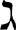

--- 
layout: article 
title: Deuteronomy
categories: ["Holy Bible","The Old Testament"] 
pageName: article 
chapterTitle: Deuteronomy 
anchor: dummy_split_002.html#filepos8122 
thumbnail: /images/thumb/tb-bible.jpg
---

<div>
<div>
<div>
<div>
<div>
<div id="filepos5136542">
<p><span><a href="dummy_split_004.html#filepos129598"><span>Psalm 98</span></a></span></p><div> </div>
<div>
<p><span><span>A psalm.</span></span></p><div> </div>
<div title="poetry">
<blockquote><p><span><sup>1</sup>Sing to the <span><span>LORD</span></span> a new song,</span></p></blockquote><div> </div>
</div>
</div>
</div>
<blockquote><p><span>for he has done marvelous things;</span></p></blockquote><div> </div>
<blockquote><p><span>his right hand and his holy arm</span></p></blockquote><div> </div>
<blockquote><p><span>have worked salvation for him.</span></p></blockquote><div> </div>
<blockquote><p id="filepos5137567"><span><sup>2</sup>The <span><span>LORD</span></span> has made his salvation known</span></p></blockquote><div> </div>
<blockquote><p><span>and revealed his righteousness to the nations.</span></p></blockquote><div> </div>
<blockquote><p><span><sup>3</sup>He has remembered his love</span></p></blockquote><div> </div>
<blockquote><p><span>and his faithfulness to Israel;</span></p></blockquote><div> </div>
<blockquote><p><span>all the ends of the earth have seen</span></p></blockquote><div> </div>
<blockquote><p><span>the salvation of our God.</span></p></blockquote>
<br/><blockquote><p><span><sup>4</sup>Shout for joy to the <span><span>LORD</span></span>, all the earth,</span></p></blockquote><div> </div>
<blockquote><p><span>burst into jubilant song with music;</span></p></blockquote><div> </div>
<blockquote><p><span><sup>5</sup>make music to the <span><span>LORD</span></span> with the harp,</span></p></blockquote><div> </div>
<blockquote><p><span>with the harp and the sound of singing,</span></p></blockquote><div> </div>
<blockquote><p><span><sup>6</sup>with trumpets and the blast of the ram’s horn—</span></p></blockquote><div> </div>
<blockquote><p><span>shout for joy before the <span><span>LORD</span></span>, the King.</span></p></blockquote>
<br/><blockquote><p><span><sup>7</sup>Let the sea resound, and everything in it,</span></p></blockquote><div> </div>
<blockquote><p><span>the world, and all who live in it.</span></p></blockquote><div> </div>
<blockquote><p><span><sup>8</sup>Let the rivers clap their hands,</span></p></blockquote><div> </div>
<blockquote><p><span>let the mountains sing together for joy;</span></p></blockquote><div> </div>
<blockquote><p><span><sup>9</sup>let them sing before the <span><span>LORD</span></span>,</span></p></blockquote><div> </div>
<blockquote><p><span>for he comes to judge the earth.</span></p></blockquote><div> </div>
<blockquote><p><span>He will judge the world in righteousness</span></p></blockquote><div> </div>
<blockquote><p><span>and the peoples with equity.</span></p></blockquote>
</div>
</div>
</div>
<div id="filepos5141230">
<p><span><a href="dummy_split_004.html#filepos129777"><span>Psalm 99</span></a></span></p><div> </div>
<div>
<div title="poetry">
<blockquote><p><span><sup>1</sup>The <span><span>LORD</span></span> reigns,</span></p></blockquote><div> </div>
<blockquote><p><span>let the nations tremble;</span></p></blockquote><div> </div>
<blockquote><p><span>he sits enthroned between the cherubim,</span></p></blockquote><div> </div>
<blockquote><p><span>let the earth shake.</span></p></blockquote><div> </div>
<blockquote><p><span><sup>2</sup>Great is the <span><span>LORD</span></span> in Zion;</span></p></blockquote><div> </div>
<blockquote><p><span>he is exalted over all the nations.</span></p></blockquote><div> </div>
<blockquote><p><span><sup>3</sup>Let them praise your great and awesome name—</span></p></blockquote><div> </div>
<blockquote><p><span>he is holy.</span></p></blockquote>
<br/><blockquote><p><span><sup>4</sup>The King is mighty, he loves justice—</span></p></blockquote><div> </div>
<blockquote><p><span>you have established equity;</span></p></blockquote><div> </div>
<blockquote><p><span>in Jacob you have done</span></p></blockquote><div> </div>
<blockquote><p><span>what is just and right.</span></p></blockquote><div> </div>
<blockquote><p><span><sup>5</sup>Exalt the <span><span>LORD</span></span> our God</span></p></blockquote><div> </div>
<blockquote><p><span>and worship at his footstool;</span></p></blockquote><div> </div>
<blockquote><p><span>he is holy.</span></p></blockquote>
<br/><blockquote><p><span><sup>6</sup>Moses and Aaron were among his priests,</span></p></blockquote><div> </div>
<blockquote><p><span>Samuel was among those who called on his name;</span></p></blockquote><div> </div>
<blockquote><p><span>they called on the <span><span>LORD</span></span></span></p></blockquote><div> </div>
<blockquote><p><span>and he answered them.</span></p></blockquote><div> </div>
<blockquote><p><span><sup>7</sup>He spoke to them from the pillar of cloud;</span></p></blockquote><div> </div>
<blockquote><p><span>they kept his statutes and the decrees he gave them.</span></p></blockquote>
<br/><blockquote><p><span><sup>8</sup><span><span>LORD</span></span> our God,</span></p></blockquote><div> </div>
<blockquote><p><span>you answered them;</span></p></blockquote><div> </div>
<blockquote><p><span>you were to Israel a forgiving God,</span></p></blockquote><div> </div>
<blockquote><p><span>though you punished their misdeeds.<a id="filepos5145654" href="dummy_split_045.html#filepos5612211"><span><sup>[249]</sup></span></a></span></p></blockquote><div> </div>
<blockquote><p><span><sup>9</sup>Exalt the <span><span>LORD</span></span> our God</span></p></blockquote><div> </div>
<blockquote><p><span>and worship at his holy mountain,</span></p></blockquote><div> </div>
<blockquote><p><span>for the <span><span>LORD</span></span> our God is holy.</span></p></blockquote>
</div>
</div>
</div>
<div id="filepos5146371">
<p><span><a href="dummy_split_004.html#filepos129956"><span>Psalm 100</span></a></span></p><div> </div>
<div>
<p><span><span>A psalm. For giving grateful praise.</span></span></p><div> </div>
<div title="poetry">
<blockquote><p><span><sup>1</sup>Shout for joy to the <span><span>LORD</span></span>, all the earth.</span></p></blockquote><div> </div>
<blockquote><p><span><sup>2</sup>Worship the <span><span>LORD</span></span> with gladness;</span></p></blockquote><div> </div>
<blockquote><p><span>come before him with joyful songs.</span></p></blockquote><div> </div>
<blockquote><p><span><sup>3</sup>Know that the <span><span>LORD</span></span> is God.</span></p></blockquote><div> </div>
<blockquote><p><span>It is he who made us, and we are his<a id="filepos5147634" href="dummy_split_045.html#filepos5612608"><span><sup>[250]</sup></span></a>;</span></p></blockquote><div> </div>
<blockquote><p><span>we are his people, the sheep of his pasture.</span></p></blockquote>
<br/><blockquote><p><span><sup>4</sup>Enter his gates with thanksgiving</span></p></blockquote><div> </div>
<blockquote><p><span>and his courts with praise;</span></p></blockquote><div> </div>
<blockquote><p><span>give thanks to him and praise his name.</span></p></blockquote><div> </div>
<blockquote><p><span><sup>5</sup>For the <span><span>LORD</span></span> is good and his love endures forever;</span></p></blockquote><div> </div>
<blockquote><p><span>his faithfulness continues through all generations.</span></p></blockquote>
</div>
</div>
</div>
<div id="filepos5148885">
<p><span><a href="dummy_split_004.html#filepos130136"><span>Psalm 101</span></a></span></p><div> </div>
<div>
<p><span><span>Of David. A psalm.</span></span></p><div> </div>
<div title="poetry">
<blockquote><p><span><sup>1</sup>I will sing of your love and justice;</span></p></blockquote><div> </div>
<blockquote><p><span>to you, <span><span>LORD</span></span>, I will sing praise.</span></p></blockquote><div> </div>
<blockquote><p><span><sup>2</sup>I will be careful to lead a blameless life—</span></p></blockquote><div> </div>
<blockquote><p><span>when will you come to me?</span></p></blockquote>
<br/><blockquote><p><span>I will conduct the affairs of my house</span></p></blockquote><div> </div>
<blockquote><p><span>with a blameless heart.</span></p></blockquote><div> </div>
<blockquote><p><span><sup>3</sup>I will not look with approval</span></p></blockquote><div> </div>
<blockquote><p><span>on anything that is vile.</span></p></blockquote>
<br/><blockquote><p><span>I hate what faithless people do;</span></p></blockquote><div> </div>
<blockquote><p><span>I will have no part in it.</span></p></blockquote><div> </div>
<blockquote><p><span><sup>4</sup>The perverse of heart shall be far from me;</span></p></blockquote><div> </div>
<blockquote><p><span>I will have nothing to do with what is evil.</span></p></blockquote>
<br/><blockquote><p><span><sup>5</sup>Whoever slanders their neighbor in secret,</span></p></blockquote><div> </div>
<blockquote><p><span>I will put to silence;</span></p></blockquote><div> </div>
<blockquote><p><span>whoever has haughty eyes and a proud heart,</span></p></blockquote><div> </div>
<blockquote><p><span>I will not tolerate.</span></p></blockquote>
<br/><blockquote><p><span><sup>6</sup>My eyes will be on the faithful in the land,</span></p></blockquote><div> </div>
<blockquote><p><span>that they may dwell with me;</span></p></blockquote><div> </div>
<blockquote><p><span>the one whose walk is blameless</span></p></blockquote><div> </div>
<blockquote><p><span>will minister to me.</span></p></blockquote>
<br/><blockquote><p><span><sup>7</sup>No one who practices deceit</span></p></blockquote><div> </div>
<blockquote><p><span>will dwell in my house;</span></p></blockquote><div> </div>
<blockquote><p><span>no one who speaks falsely</span></p></blockquote><div> </div>
<blockquote><p><span>will stand in my presence.</span></p></blockquote>
<br/><blockquote><p><span><sup>8</sup>Every morning I will put to silence</span></p></blockquote><div> </div>
<blockquote><p><span>all the wicked in the land;</span></p></blockquote><div> </div>
<blockquote><p><span>I will cut off every evildoer</span></p></blockquote><div> </div>
<blockquote><p><span>from the city of the <span><span>LORD</span></span>.</span></p></blockquote>
</div>
</div>
</div>
<div id="filepos5153945">
<p><span><a href="dummy_split_004.html#filepos130316"><span>Psalm 102</span></a><a id="filepos5154081" href="dummy_split_045.html#filepos5612982"><span><sup>[251]</sup></span></a></span></p><div> </div>
<div>
<p><span><span>A prayer of an afflicted person who has grown weak and pours out a lament before the <span><span>LORD</span></span>.</span></span></p><div> </div>
<div title="poetry">
<blockquote><p id="filepos5154466"><span><sup>1</sup>Hear my prayer, <span><span>LORD</span></span>;</span></p></blockquote><div> </div>
<blockquote><p><span>let my cry for help come to you.</span></p></blockquote><div> </div>
<blockquote><p><span><sup>2</sup>Do not hide your face from me</span></p></blockquote><div> </div>
<blockquote><p><span>when I am in distress.</span></p></blockquote><div> </div>
<blockquote><p><span>Turn your ear to me;</span></p></blockquote><div> </div>
<blockquote><p><span>when I call, answer me quickly.</span></p></blockquote>
<br/><blockquote><p><span><sup>3</sup>For my days vanish like smoke;</span></p></blockquote><div> </div>
<blockquote><p><span>my bones burn like glowing embers.</span></p></blockquote><div> </div>
<blockquote><p><span><sup>4</sup>My heart is blighted and withered like grass;</span></p></blockquote><div> </div>
<blockquote><p><span>I forget to eat my food.</span></p></blockquote><div> </div>
<blockquote><p><span><sup>5</sup>In my distress I groan aloud</span></p></blockquote><div> </div>
<blockquote><p><span>and am reduced to skin and bones.</span></p></blockquote><div> </div>
<blockquote><p><span><sup>6</sup>I am like a desert owl,</span></p></blockquote><div> </div>
<blockquote><p><span>like an owl among the ruins.</span></p></blockquote><div> </div>
<blockquote><p><span><sup>7</sup>I lie awake; I have become</span></p></blockquote><div> </div>
<blockquote><p><span>like a bird alone on a roof.</span></p></blockquote><div> </div>
<blockquote><p><span><sup>8</sup>All day long my enemies taunt me;</span></p></blockquote><div> </div>
<blockquote><p><span>those who rail against me use my name as a curse.</span></p></blockquote><div> </div>
<blockquote><p><span><sup>9</sup>For I eat ashes as my food</span></p></blockquote><div> </div>
<blockquote><p><span>and mingle my drink with tears</span></p></blockquote><div> </div>
<blockquote><p><span><sup>10</sup>because of your great wrath,</span></p></blockquote><div> </div>
<blockquote><p><span>for you have taken me up and thrown me aside.</span></p></blockquote><div> </div>
<blockquote><p><span><sup>11</sup>My days are like the evening shadow;</span></p></blockquote><div> </div>
<blockquote><p><span>I wither away like grass.</span></p></blockquote>
<br/><blockquote><p><span><sup>12</sup>But you, <span><span>LORD</span></span>, sit enthroned forever;</span></p></blockquote><div> </div>
<blockquote><p><span>your renown endures through all generations.</span></p></blockquote><div> </div>
<blockquote><p><span><sup>13</sup>You will arise and have compassion on Zion,</span></p></blockquote><div> </div>
<blockquote><p><span>for it is time to show favor to her;</span></p></blockquote><div> </div>
<blockquote><p><span>the appointed time has come.</span></p></blockquote><div> </div>
<blockquote><p><span><sup>14</sup>For her stones are dear to your servants;</span></p></blockquote><div> </div>
<blockquote><p><span>her very dust moves them to pity.</span></p></blockquote><div> </div>
<blockquote><p><span><sup>15</sup>The nations will fear the name of the <span><span>LORD</span></span>,</span></p></blockquote><div> </div>
<blockquote><p><span>all the kings of the earth will revere your glory.</span></p></blockquote><div> </div>
<blockquote><p><span><sup>16</sup>For the <span><span>LORD</span></span> will rebuild Zion</span></p></blockquote><div> </div>
<blockquote><p><span>and appear in his glory.</span></p></blockquote><div> </div>
<blockquote><p><span><sup>17</sup>He will respond to the prayer of the destitute;</span></p></blockquote><div> </div>
<blockquote><p><span>he will not despise their plea.</span></p></blockquote>
<br/><blockquote><p><span><sup>18</sup>Let this be written for a future generation,</span></p></blockquote><div> </div>
<blockquote><p><span>that a people not yet created may praise the <span><span>LORD</span></span>:</span></p></blockquote><div> </div>
<blockquote><p><span><sup>19</sup>“The <span><span>LORD</span></span> looked down from his sanctuary on high,</span></p></blockquote><div> </div>
<blockquote><p><span>from heaven he viewed the earth,</span></p></blockquote><div> </div>
<blockquote><p><span><sup>20</sup>to hear the groans of the prisoners</span></p></blockquote><div> </div>
<blockquote><p><span>and release those condemned to death.”</span></p></blockquote><div> </div>
<blockquote><p><span><sup>21</sup>So the name of the <span><span>LORD</span></span> will be declared in Zion</span></p></blockquote><div> </div>
<blockquote><p><span>and his praise in Jerusalem</span></p></blockquote><div> </div>
<blockquote><p><span><sup>22</sup>when the peoples and the kingdoms</span></p></blockquote><div> </div>
<blockquote><p><span>assemble to worship the <span><span>LORD</span></span>.</span></p></blockquote>
<br/><blockquote><p><span><sup>23</sup>In the course of my life<a id="filepos5162997" href="dummy_split_045.html#filepos5613307"><span><sup>[252]</sup></span></a> he broke my strength;</span></p></blockquote><div> </div>
<blockquote><p><span>he cut short my days.</span></p></blockquote><div> </div>
<blockquote><p><span><sup>24</sup>So I said:</span></p></blockquote><div> </div>
<blockquote><p><span>“Do not take me away, my God, in the midst of my days;</span></p></blockquote><div> </div>
<blockquote><p><span>your years go on through all generations.</span></p></blockquote><div> </div>
<blockquote><p id="filepos5163820"><span><sup>25</sup>In the beginning you laid the foundations of the earth,</span></p></blockquote><div> </div>
<blockquote><p><span>and the heavens are the work of your hands.</span></p></blockquote><div> </div>
<blockquote><p><span><sup>26</sup>They will perish, but you remain;</span></p></blockquote><div> </div>
<blockquote><p><span>they will all wear out like a garment.</span></p></blockquote><div> </div>
<blockquote><p><span>Like clothing you will change them</span></p></blockquote><div> </div>
<blockquote><p><span>and they will be discarded.</span></p></blockquote><div> </div>
<blockquote><p><span><sup>27</sup>But you remain the same,</span></p></blockquote><div> </div>
<blockquote><p><span>and your years will never end.</span></p></blockquote><div> </div>
<blockquote><p><span><sup>28</sup>The children of your servants will live in your presence;</span></p></blockquote><div> </div>
<blockquote><p><span>their descendants will be established before you.”</span></p></blockquote>
</div>
</div>
</div>
<div id="filepos5165603">
<p><span><a href="dummy_split_004.html#filepos130496"><span>Psalm 103</span></a></span></p><div> </div>
<div>
<p><span><span>Of David.</span></span></p><div> </div>
<div title="poetry">
<blockquote><p><span><sup>1</sup>Praise the <span><span>LORD</span></span>, my soul;</span></p></blockquote><div> </div>
<blockquote><p><span>all my inmost being, praise his holy name.</span></p></blockquote><div> </div>
<blockquote><p><span><sup>2</sup>Praise the <span><span>LORD</span></span>, my soul,</span></p></blockquote><div> </div>
<blockquote><p><span>and forget not all his benefits—</span></p></blockquote><div> </div>
<blockquote><p><span><sup>3</sup>who forgives all your sins</span></p></blockquote><div> </div>
<blockquote><p><span>and heals all your diseases,</span></p></blockquote><div> </div>
<blockquote><p><span><sup>4</sup>who redeems your life from the pit</span></p></blockquote><div> </div>
<blockquote><p><span>and crowns you with love and compassion,</span></p></blockquote><div> </div>
<blockquote><p><span><sup>5</sup>who satisfies your desires with good things</span></p></blockquote><div> </div>
<blockquote><p><span>so that your youth is renewed like the eagle’s.</span></p></blockquote>
<br/><blockquote><p><span><sup>6</sup>The <span><span>LORD</span></span> works righteousness</span></p></blockquote><div> </div>
<blockquote><p><span>and justice for all the oppressed.</span></p></blockquote>
<br/><blockquote><p><span><sup>7</sup>He made known his ways to Moses,</span></p></blockquote><div> </div>
<blockquote><p><span>his deeds to the people of Israel:</span></p></blockquote><div> </div>
<blockquote><p><span><sup>8</sup>The <span><span>LORD</span></span> is compassionate and gracious,</span></p></blockquote><div> </div>
<blockquote><p><span>slow to anger, abounding in love.</span></p></blockquote><div> </div>
<blockquote><p><span><sup>9</sup>He will not always accuse,</span></p></blockquote><div> </div>
<blockquote><p><span>nor will he harbor his anger forever;</span></p></blockquote><div> </div>
<blockquote><p><span><sup>10</sup>he does not treat us as our sins deserve</span></p></blockquote><div> </div>
<blockquote><p><span>or repay us according to our iniquities.</span></p></blockquote><div> </div>
<blockquote><p><span><sup>11</sup>For as high as the heavens are above the earth,</span></p></blockquote><div> </div>
<blockquote><p><span>so great is his love for those who fear him;</span></p></blockquote><div> </div>
<blockquote><p><span><sup>12</sup>as far as the east is from the west,</span></p></blockquote><div> </div>
<blockquote><p><span>so far has he removed our transgressions from us.</span></p></blockquote>
<br/><blockquote><p><span><sup>13</sup>As a father has compassion on his children,</span></p></blockquote><div> </div>
<blockquote><p><span>so the <span><span>LORD</span></span> has compassion on those who fear him;</span></p></blockquote><div> </div>
<blockquote><p><span><sup>14</sup>for he knows how we are formed,</span></p></blockquote><div> </div>
<blockquote><p><span>he remembers that we are dust.</span></p></blockquote><div> </div>
<blockquote><p><span><sup>15</sup>The life of mortals is like grass,</span></p></blockquote><div> </div>
<blockquote><p><span>they flourish like a flower of the field;</span></p></blockquote><div> </div>
<blockquote><p><span><sup>16</sup>the wind blows over it and it is gone,</span></p></blockquote><div> </div>
<blockquote><p><span>and its place remembers it no more.</span></p></blockquote><div> </div>
<blockquote><p><span><sup>17</sup>But from everlasting to everlasting</span></p></blockquote><div> </div>
<blockquote><p><span>the <span><span>LORD</span></span>’s love is with those who fear him,</span></p></blockquote><div> </div>
<blockquote><p><span>and his righteousness with their children’s children—</span></p></blockquote><div> </div>
<blockquote><p><span><sup>18</sup>with those who keep his covenant</span></p></blockquote><div> </div>
<blockquote><p><span>and remember to obey his precepts.</span></p></blockquote>
<br/><blockquote><p><span><sup>19</sup>The <span><span>LORD</span></span> has established his throne in heaven,</span></p></blockquote><div> </div>
<blockquote><p><span>and his kingdom rules over all.</span></p></blockquote>
<br/><blockquote><p><span><sup>20</sup>Praise the <span><span>LORD</span></span>, you his angels,</span></p></blockquote><div> </div>
<blockquote><p><span>you mighty ones who do his bidding,</span></p></blockquote><div> </div>
<blockquote><p><span>who obey his word.</span></p></blockquote><div> </div>
<blockquote><p><span><sup>21</sup>Praise the <span><span>LORD</span></span>, all his heavenly hosts,</span></p></blockquote><div> </div>
<blockquote><p><span>you his servants who do his will.</span></p></blockquote><div> </div>
<blockquote><p><span><sup>22</sup>Praise the <span><span>LORD</span></span>, all his works</span></p></blockquote><div> </div>
<blockquote><p><span>everywhere in his dominion.</span></p></blockquote>
<br/><blockquote><p><span>Praise the <span><span>LORD</span></span>, my soul.</span></p></blockquote>
</div>
</div>
</div>
<div id="filepos5174560">
<p><span><a href="dummy_split_004.html#filepos130676"><span>Psalm 104</span></a></span></p><div> </div>
<div>
<div title="poetry">
<blockquote><p><span><sup>1</sup>Praise the <span><span>LORD</span></span>, my soul.</span></p></blockquote><div> </div>
<br/><blockquote><p><span><span><span>LORD</span></span> my God, you are very great;</span></p></blockquote><div> </div>
<blockquote><p><span>you are clothed with splendor and majesty.</span></p></blockquote>
<br/><blockquote><p><span><sup>2</sup>The <span><span>LORD</span></span> wraps himself in light as with a garment;</span></p></blockquote><div> </div>
<blockquote><p><span>he stretches out the heavens like a tent</span></p></blockquote><div> </div>
<blockquote><p><span><sup>3</sup>and lays the beams of his upper chambers on their waters.</span></p></blockquote><div> </div>
<blockquote><p><span>He makes the clouds his chariot</span></p></blockquote><div> </div>
<blockquote><p><span>and rides on the wings of the wind.</span></p></blockquote><div> </div>
<blockquote><p id="filepos5176263"><span><sup>4</sup>He makes winds his messengers,<a id="filepos5176393" href="dummy_split_045.html#filepos5613674"><span><sup>[253]</sup></span></a></span></p></blockquote><div> </div>
<blockquote><p><span>flames of fire his servants.</span></p></blockquote>
<br/><blockquote><p><span><sup>5</sup>He set the earth on its foundations;</span></p></blockquote><div> </div>
<blockquote><p><span>it can never be moved.</span></p></blockquote><div> </div>
<blockquote><p><span><sup>6</sup>You covered it with the watery depths as with a garment;</span></p></blockquote><div> </div>
<blockquote><p><span>the waters stood above the mountains.</span></p></blockquote><div> </div>
<blockquote><p><span><sup>7</sup>But at your rebuke the waters fled,</span></p></blockquote><div> </div>
<blockquote><p><span>at the sound of your thunder they took to flight;</span></p></blockquote><div> </div>
<blockquote><p><span><sup>8</sup>they flowed over the mountains,</span></p></blockquote><div> </div>
<blockquote><p><span>they went down into the valleys,</span></p></blockquote><div> </div>
<blockquote><p><span>to the place you assigned for them.</span></p></blockquote><div> </div>
<blockquote><p><span><sup>9</sup>You set a boundary they cannot cross;</span></p></blockquote><div> </div>
<blockquote><p><span>never again will they cover the earth.</span></p></blockquote>
<br/><blockquote><p><span><sup>10</sup>He makes springs pour water into the ravines;</span></p></blockquote><div> </div>
<blockquote><p><span>it flows between the mountains.</span></p></blockquote><div> </div>
<blockquote><p><span><sup>11</sup>They give water to all the beasts of the field;</span></p></blockquote><div> </div>
<blockquote><p><span>the wild donkeys quench their thirst.</span></p></blockquote><div> </div>
<blockquote><p><span><sup>12</sup>The birds of the sky nest by the waters;</span></p></blockquote><div> </div>
<blockquote><p><span>they sing among the branches.</span></p></blockquote><div> </div>
<blockquote><p><span><sup>13</sup>He waters the mountains from his upper chambers;</span></p></blockquote><div> </div>
<blockquote><p><span>the land is satisfied by the fruit of his work.</span></p></blockquote><div> </div>
<blockquote><p><span><sup>14</sup>He makes grass grow for the cattle,</span></p></blockquote><div> </div>
<blockquote><p><span>and plants for people to cultivate—</span></p></blockquote><div> </div>
<blockquote><p><span>bringing forth food from the earth:</span></p></blockquote><div> </div>
<blockquote><p><span><sup>15</sup>wine that gladdens human hearts,</span></p></blockquote><div> </div>
<blockquote><p><span>oil to make their faces shine,</span></p></blockquote><div> </div>
<blockquote><p><span>and bread that sustains their hearts.</span></p></blockquote><div> </div>
<blockquote><p><span><sup>16</sup>The trees of the <span><span>LORD</span></span> are well watered,</span></p></blockquote><div> </div>
<blockquote><p><span>the cedars of Lebanon that he planted.</span></p></blockquote><div> </div>
<blockquote><p><span><sup>17</sup>There the birds make their nests;</span></p></blockquote><div> </div>
<blockquote><p><span>the stork has its home in the junipers.</span></p></blockquote><div> </div>
<blockquote><p><span><sup>18</sup>The high mountains belong to the wild goats;</span></p></blockquote><div> </div>
<blockquote><p><span>the crags are a refuge for the hyrax.</span></p></blockquote>
<br/><blockquote><p><span><sup>19</sup>He made the moon to mark the seasons,</span></p></blockquote><div> </div>
<blockquote><p><span>and the sun knows when to go down.</span></p></blockquote><div> </div>
<blockquote><p><span><sup>20</sup>You bring darkness, it becomes night,</span></p></blockquote><div> </div>
<blockquote><p><span>and all the beasts of the forest prowl.</span></p></blockquote><div> </div>
<blockquote><p><span><sup>21</sup>The lions roar for their prey</span></p></blockquote><div> </div>
<blockquote><p><span>and seek their food from God.</span></p></blockquote><div> </div>
<blockquote><p><span><sup>22</sup>The sun rises, and they steal away;</span></p></blockquote><div> </div>
<blockquote><p><span>they return and lie down in their dens.</span></p></blockquote><div> </div>
<blockquote><p><span><sup>23</sup>Then people go out to their work,</span></p></blockquote><div> </div>
<blockquote><p><span>to their labor until evening.</span></p></blockquote>
<br/><blockquote><p><span><sup>24</sup>How many are your works, <span><span>LORD</span></span>!</span></p></blockquote><div> </div>
<blockquote><p><span>In wisdom you made them all;</span></p></blockquote><div> </div>
<blockquote><p><span>the earth is full of your creatures.</span></p></blockquote><div> </div>
<blockquote><p><span><sup>25</sup>There is the sea, vast and spacious,</span></p></blockquote><div> </div>
<blockquote><p><span>teeming with creatures beyond number—</span></p></blockquote><div> </div>
<blockquote><p><span>living things both large and small.</span></p></blockquote><div> </div>
<blockquote><p><span><sup>26</sup>There the ships go to and fro,</span></p></blockquote><div> </div>
<blockquote><p><span>and Leviathan, which you formed to frolic there.</span></p></blockquote>
<br/><blockquote><p><span><sup>27</sup>All creatures look to you</span></p></blockquote><div> </div>
<blockquote><p><span>to give them their food at the proper time.</span></p></blockquote><div> </div>
<blockquote><p><span><sup>28</sup>When you give it to them,</span></p></blockquote><div> </div>
<blockquote><p><span>they gather it up;</span></p></blockquote><div> </div>
<blockquote><p><span>when you open your hand,</span></p></blockquote><div> </div>
<blockquote><p><span>they are satisfied with good things.</span></p></blockquote><div> </div>
<blockquote><p><span><sup>29</sup>When you hide your face,</span></p></blockquote><div> </div>
<blockquote><p><span>they are terrified;</span></p></blockquote><div> </div>
<blockquote><p><span>when you take away their breath,</span></p></blockquote><div> </div>
<blockquote><p><span>they die and return to the dust.</span></p></blockquote><div> </div>
<blockquote><p><span><sup>30</sup>When you send your Spirit,</span></p></blockquote><div> </div>
<blockquote><p><span>they are created,</span></p></blockquote><div> </div>
<blockquote><p><span>and you renew the face of the ground.</span></p></blockquote>
<br/><blockquote><p><span><sup>31</sup>May the glory of the <span><span>LORD</span></span> endure forever;</span></p></blockquote><div> </div>
<blockquote><p><span>may the <span><span>LORD</span></span> rejoice in his works—</span></p></blockquote><div> </div>
<blockquote><p><span><sup>32</sup>he who looks at the earth, and it trembles,</span></p></blockquote><div> </div>
<blockquote><p><span>who touches the mountains, and they smoke.</span></p></blockquote>
<br/><blockquote><p><span><sup>33</sup>I will sing to the <span><span>LORD</span></span> all my life;</span></p></blockquote><div> </div>
<blockquote><p><span>I will sing praise to my God as long as I live.</span></p></blockquote><div> </div>
<blockquote><p><span><sup>34</sup>May my meditation be pleasing to him,</span></p></blockquote><div> </div>
<blockquote><p><span>as I rejoice in the <span><span>LORD</span></span>.</span></p></blockquote><div> </div>
<blockquote><p><span><sup>35</sup>But may sinners vanish from the earth</span></p></blockquote><div> </div>
<blockquote><p><span>and the wicked be no more.</span></p></blockquote>
<br/><blockquote><p><span>Praise the <span><span>LORD</span></span>, my soul.</span></p></blockquote>
<br/><blockquote><p><span>Praise the <span><span>LORD</span></span>.<a id="filepos5189677" href="dummy_split_045.html#filepos5613917"><span><sup>[254]</sup></span></a></span></p></blockquote>
</div>
</div>
</div>
<div id="filepos5189834">
<p><span><a href="dummy_split_004.html#filepos130856"><span>Psalm 105</span></a></span></p><div> </div>
<div>
<div title="poetry">
<blockquote><p id="filepos5190032"><span><sup>1</sup>Give praise to the <span><span>LORD</span></span>, proclaim his name;</span></p></blockquote><div> </div>
<blockquote><p><span>make known among the nations what he has done.</span></p></blockquote><div> </div>
<blockquote><p><span><sup>2</sup>Sing to him, sing praise to him;</span></p></blockquote><div> </div>
<blockquote><p><span>tell of all his wonderful acts.</span></p></blockquote><div> </div>
<blockquote><p><span><sup>3</sup>Glory in his holy name;</span></p></blockquote><div> </div>
<blockquote><p><span>let the hearts of those who seek the <span><span>LORD</span></span> rejoice.</span></p></blockquote><div> </div>
<blockquote><p><span><sup>4</sup>Look to the <span><span>LORD</span></span> and his strength;</span></p></blockquote><div> </div>
<blockquote><p><span>seek his face always.</span></p></blockquote>
<br/><blockquote><p><span><sup>5</sup>Remember the wonders he has done,</span></p></blockquote><div> </div>
<blockquote><p><span>his miracles, and the judgments he pronounced,</span></p></blockquote><div> </div>
<blockquote><p><span><sup>6</sup>you his servants, the descendants of Abraham,</span></p></blockquote><div> </div>
<blockquote><p><span>his chosen ones, the children of Jacob.</span></p></blockquote><div> </div>
<blockquote><p><span><sup>7</sup>He is the <span><span>LORD</span></span> our God;</span></p></blockquote><div> </div>
<blockquote><p><span>his judgments are in all the earth.</span></p></blockquote>
<br/><blockquote><p id="filepos5192626"><span><sup>8</sup>He remembers his covenant forever,</span></p></blockquote><div> </div>
<blockquote><p><span>the promise he made, for a thousand generations,</span></p></blockquote><div> </div>
<blockquote><p><span><sup>9</sup>the covenant he made with Abraham,</span></p></blockquote><div> </div>
<blockquote><p><span>the oath he swore to Isaac.</span></p></blockquote><div> </div>
<blockquote><p><span><sup>10</sup>He confirmed it to Jacob as a decree,</span></p></blockquote><div> </div>
<blockquote><p><span>to Israel as an everlasting covenant:</span></p></blockquote><div> </div>
<blockquote><p><span><sup>11</sup>“To you I will give the land of Canaan</span></p></blockquote><div> </div>
<blockquote><p><span>as the portion you will inherit.”</span></p></blockquote>
<br/><blockquote><p id="filepos5194041"><span><sup>12</sup>When they were but few in number,</span></p></blockquote><div> </div>
<blockquote><p><span>few indeed, and strangers in it,</span></p></blockquote><div> </div>
<blockquote><p><span><sup>13</sup>they wandered from nation to nation,</span></p></blockquote><div> </div>
<blockquote><p><span>from one kingdom to another.</span></p></blockquote><div> </div>
<blockquote><p><span><sup>14</sup>He allowed no one to oppress them;</span></p></blockquote><div> </div>
<blockquote><p><span>for their sake he rebuked kings:</span></p></blockquote><div> </div>
<blockquote><p><span><sup>15</sup>“Do not touch my anointed ones;</span></p></blockquote><div> </div>
<blockquote><p><span>do my prophets no harm.”</span></p></blockquote>
<br/><blockquote><p><span><sup>16</sup>He called down famine on the land</span></p></blockquote><div> </div>
<blockquote><p><span>and destroyed all their supplies of food;</span></p></blockquote><div> </div>
<blockquote><p><span><sup>17</sup>and he sent a man before them—</span></p></blockquote><div> </div>
<blockquote><p><span>Joseph, sold as a slave.</span></p></blockquote><div> </div>
<blockquote><p><span><sup>18</sup>They bruised his feet with shackles,</span></p></blockquote><div> </div>
<blockquote><p><span>his neck was put in irons,</span></p></blockquote><div> </div>
<blockquote><p><span><sup>19</sup>till what he foretold came to pass,</span></p></blockquote><div> </div>
<blockquote><p><span>till the word of the <span><span>LORD</span></span> proved him true.</span></p></blockquote><div> </div>
<blockquote><p><span><sup>20</sup>The king sent and released him,</span></p></blockquote><div> </div>
<blockquote><p><span>the ruler of peoples set him free.</span></p></blockquote><div> </div>
<blockquote><p><span><sup>21</sup>He made him master of his household,</span></p></blockquote><div> </div>
<blockquote><p><span>ruler over all he possessed,</span></p></blockquote><div> </div>
<blockquote><p><span><sup>22</sup>to instruct his princes as he pleased</span></p></blockquote><div> </div>
<blockquote><p><span>and teach his elders wisdom.</span></p></blockquote>
<br/><blockquote><p><span><sup>23</sup>Then Israel entered Egypt;</span></p></blockquote><div> </div>
<blockquote><p><span>Jacob resided as a foreigner in the land of Ham.</span></p></blockquote><div> </div>
<blockquote><p><span><sup>24</sup>The <span><span>LORD</span></span> made his people very fruitful;</span></p></blockquote><div> </div>
<blockquote><p><span>he made them too numerous for their foes,</span></p></blockquote><div> </div>
<blockquote><p><span><sup>25</sup>whose hearts he turned to hate his people,</span></p></blockquote><div> </div>
<blockquote><p><span>to conspire against his servants.</span></p></blockquote><div> </div>
<blockquote><p><span><sup>26</sup>He sent Moses his servant,</span></p></blockquote><div> </div>
<blockquote><p><span>and Aaron, whom he had chosen.</span></p></blockquote><div> </div>
<blockquote><p><span><sup>27</sup>They performed his signs among them,</span></p></blockquote><div> </div>
<blockquote><p><span>his wonders in the land of Ham.</span></p></blockquote><div> </div>
<blockquote><p><span><sup>28</sup>He sent darkness and made the land dark—</span></p></blockquote><div> </div>
<blockquote><p><span>for had they not rebelled against his words?</span></p></blockquote><div> </div>
<blockquote><p><span><sup>29</sup>He turned their waters into blood,</span></p></blockquote><div> </div>
<blockquote><p><span>causing their fish to die.</span></p></blockquote><div> </div>
<blockquote><p><span><sup>30</sup>Their land teemed with frogs,</span></p></blockquote><div> </div>
<blockquote><p><span>which went up into the bedrooms of their rulers.</span></p></blockquote><div> </div>
<blockquote><p><span><sup>31</sup>He spoke, and there came swarms of flies,</span></p></blockquote><div> </div>
<blockquote><p><span>and gnats throughout their country.</span></p></blockquote><div> </div>
<blockquote><p><span><sup>32</sup>He turned their rain into hail,</span></p></blockquote><div> </div>
<blockquote><p><span>with lightning throughout their land;</span></p></blockquote><div> </div>
<blockquote><p><span><sup>33</sup>he struck down their vines and fig trees</span></p></blockquote><div> </div>
<blockquote><p><span>and shattered the trees of their country.</span></p></blockquote><div> </div>
<blockquote><p><span><sup>34</sup>He spoke, and the locusts came,</span></p></blockquote><div> </div>
<blockquote><p><span>grasshoppers without number;</span></p></blockquote><div> </div>
<blockquote><p><span><sup>35</sup>they ate up every green thing in their land,</span></p></blockquote><div> </div>
<blockquote><p><span>ate up the produce of their soil.</span></p></blockquote><div> </div>
<blockquote><p><span><sup>36</sup>Then he struck down all the firstborn in their land,</span></p></blockquote><div> </div>
<blockquote><p><span>the firstfruits of all their manhood.</span></p></blockquote><div> </div>
<blockquote><p><span><sup>37</sup>He brought out Israel, laden with silver and gold,</span></p></blockquote><div> </div>
<blockquote><p><span>and from among their tribes no one faltered.</span></p></blockquote><div> </div>
<blockquote><p><span><sup>38</sup>Egypt was glad when they left,</span></p></blockquote><div> </div>
<blockquote><p><span>because dread of Israel had fallen on them.</span></p></blockquote>
<br/><blockquote><p><span><sup>39</sup>He spread out a cloud as a covering,</span></p></blockquote><div> </div>
<blockquote><p><span>and a fire to give light at night.</span></p></blockquote><div> </div>
<blockquote><p><span><sup>40</sup>They asked, and he brought them quail;</span></p></blockquote><div> </div>
<blockquote><p><span>he fed them well with the bread of heaven.</span></p></blockquote><div> </div>
<blockquote><p><span><sup>41</sup>He opened the rock, and water gushed out;</span></p></blockquote><div> </div>
<blockquote><p><span>it flowed like a river in the desert.</span></p></blockquote>
<br/><blockquote><p><span><sup>42</sup>For he remembered his holy promise</span></p></blockquote><div> </div>
<blockquote><p><span>given to his servant Abraham.</span></p></blockquote><div> </div>
<blockquote><p><span><sup>43</sup>He brought out his people with rejoicing,</span></p></blockquote><div> </div>
<blockquote><p><span>his chosen ones with shouts of joy;</span></p></blockquote><div> </div>
<blockquote><p><span><sup>44</sup>he gave them the lands of the nations,</span></p></blockquote><div> </div>
<blockquote><p><span>and they fell heir to what others had toiled for—</span></p></blockquote><div> </div>
<blockquote><p><span><sup>45</sup>that they might keep his precepts</span></p></blockquote><div> </div>
<blockquote><p><span>and observe his laws.</span></p></blockquote>
<br/><blockquote><p><span>Praise the <span><span>LORD</span></span>.<a id="filepos5206158" href="dummy_split_045.html#filepos5614407"><span><sup>[255]</sup></span></a></span></p></blockquote>
</div>
</div>
</div>
<div id="filepos5206315">
<p><span><a href="dummy_split_004.html#filepos131036"><span>Psalm 106</span></a></span></p><div> </div>
<div>
<div title="poetry">
<blockquote><p><span><sup>1</sup>Praise the <span><span>LORD</span></span>.<a id="filepos5206665" href="dummy_split_045.html#filepos5614777"><span><sup>[256]</sup></span></a></span></p></blockquote><div> </div>
<br/><blockquote><p><span>Give thanks to the <span><span>LORD</span></span>, for he is good;</span></p></blockquote><div> </div>
<blockquote><p><span>his love endures forever.</span></p></blockquote>
<br/><blockquote><p><span><sup>2</sup>Who can proclaim the mighty acts of the <span><span>LORD</span></span></span></p></blockquote><div> </div>
<blockquote><p><span>or fully declare his praise?</span></p></blockquote><div> </div>
<blockquote><p><span><sup>3</sup>Blessed are those who act justly,</span></p></blockquote><div> </div>
<blockquote><p><span>who always do what is right.</span></p></blockquote>
<br/><blockquote><p><span><sup>4</sup>Remember me, <span><span>LORD</span></span>, when you show favor to your people,</span></p></blockquote><div> </div>
<blockquote><p><span>come to my aid when you save them,</span></p></blockquote><div> </div>
<blockquote><p><span><sup>5</sup>that I may enjoy the prosperity of your chosen ones,</span></p></blockquote><div> </div>
<blockquote><p><span>that I may share in the joy of your nation</span></p></blockquote><div> </div>
<blockquote><p><span>and join your inheritance in giving praise.</span></p></blockquote>
<br/><blockquote><p><span><sup>6</sup>We have sinned, even as our ancestors did;</span></p></blockquote><div> </div>
<blockquote><p><span>we have done wrong and acted wickedly.</span></p></blockquote><div> </div>
<blockquote><p><span><sup>7</sup>When our ancestors were in Egypt,</span></p></blockquote><div> </div>
<blockquote><p><span>they gave no thought to your miracles;</span></p></blockquote><div> </div>
<blockquote><p><span>they did not remember your many kindnesses,</span></p></blockquote><div> </div>
<blockquote><p><span>and they rebelled by the sea, the Red Sea.<a id="filepos5209837" href="dummy_split_045.html#filepos5615100"><span><sup>[257]</sup></span></a></span></p></blockquote><div> </div>
<blockquote><p><span><sup>8</sup>Yet he saved them for his name’s sake,</span></p></blockquote><div> </div>
<blockquote><p><span>to make his mighty power known.</span></p></blockquote><div> </div>
<blockquote><p id="filepos5210326"><span><sup>9</sup>He rebuked the Red Sea, and it dried up;</span></p></blockquote><div> </div>
<blockquote><p><span>he led them through the depths as through a desert.</span></p></blockquote><div> </div>
<blockquote><p><span><sup>10</sup>He saved them from the hand of the foe;</span></p></blockquote><div> </div>
<blockquote><p><span>from the hand of the enemy he redeemed them.</span></p></blockquote><div> </div>
<blockquote><p><span><sup>11</sup>The waters covered their adversaries;</span></p></blockquote><div> </div>
<blockquote><p><span>not one of them survived.</span></p></blockquote><div> </div>
<blockquote><p><span><sup>12</sup>Then they believed his promises</span></p></blockquote><div> </div>
<blockquote><p><span>and sang his praise.</span></p></blockquote>
<br/><blockquote><p><span><sup>13</sup>But they soon forgot what he had done</span></p></blockquote><div> </div>
<blockquote><p><span>and did not wait for his plan to unfold.</span></p></blockquote><div> </div>
<blockquote><p><span><sup>14</sup>In the desert they gave in to their craving;</span></p></blockquote><div> </div>
<blockquote><p><span>in the wilderness they put God to the test.</span></p></blockquote><div> </div>
<blockquote><p><span><sup>15</sup>So he gave them what they asked for,</span></p></blockquote><div> </div>
<blockquote><p><span>but sent a wasting disease among them.</span></p></blockquote>
<br/><blockquote><p><span><sup>16</sup>In the camp they grew envious of Moses</span></p></blockquote><div> </div>
<blockquote><p><span>and of Aaron, who was consecrated to the <span><span>LORD</span></span>.</span></p></blockquote><div> </div>
<blockquote><p><span><sup>17</sup>The earth opened up and swallowed Dathan;</span></p></blockquote><div> </div>
<blockquote><p><span>it buried the company of Abiram.</span></p></blockquote><div> </div>
<blockquote><p><span><sup>18</sup>Fire blazed among their followers;</span></p></blockquote><div> </div>
<blockquote><p><span>a flame consumed the wicked.</span></p></blockquote><div> </div>
<blockquote><p><span><sup>19</sup>At Horeb they made a calf</span></p></blockquote><div> </div>
<blockquote><p><span>and worshiped an idol cast from metal.</span></p></blockquote><div> </div>
<blockquote><p><span><sup>20</sup>They exchanged their glorious God</span></p></blockquote><div> </div>
<blockquote><p><span>for an image of a bull, which eats grass.</span></p></blockquote><div> </div>
<blockquote><p><span><sup>21</sup>They forgot the God who saved them,</span></p></blockquote><div> </div>
<blockquote><p><span>who had done great things in Egypt,</span></p></blockquote><div> </div>
<blockquote><p id="filepos5214936"><span><sup>22</sup>miracles in the land of Ham</span></p></blockquote><div> </div>
<blockquote><p><span>and awesome deeds by the Red Sea.</span></p></blockquote><div> </div>
<blockquote><p><span><sup>23</sup>So he said he would destroy them—</span></p></blockquote><div> </div>
<blockquote><p><span>had not Moses, his chosen one,</span></p></blockquote><div> </div>
<blockquote><p><span>stood in the breach before him</span></p></blockquote><div> </div>
<blockquote><p><span>to keep his wrath from destroying them.</span></p></blockquote>
<br/><blockquote><p><span><sup>24</sup>Then they despised the pleasant land;</span></p></blockquote><div> </div>
<blockquote><p><span>they did not believe his promise.</span></p></blockquote><div> </div>
<blockquote><p><span><sup>25</sup>They grumbled in their tents</span></p></blockquote><div> </div>
<blockquote><p><span>and did not obey the <span><span>LORD</span></span>.</span></p></blockquote><div> </div>
<blockquote><p><span><sup>26</sup>So he swore to them with uplifted hand</span></p></blockquote><div> </div>
<blockquote><p><span>that he would make them fall in the wilderness,</span></p></blockquote><div> </div>
<blockquote><p><span><sup>27</sup>make their descendants fall among the nations</span></p></blockquote><div> </div>
<blockquote><p><span>and scatter them throughout the lands.</span></p></blockquote>
<br/><blockquote><p><span><sup>28</sup>They yoked themselves to the Baal of Peor</span></p></blockquote><div> </div>
<blockquote><p><span>and ate sacrifices offered to lifeless gods;</span></p></blockquote><div> </div>
<blockquote><p><span><sup>29</sup>they aroused the <span><span>LORD</span></span>’s anger by their wicked deeds,</span></p></blockquote><div> </div>
<blockquote><p><span>and a plague broke out among them.</span></p></blockquote><div> </div>
<blockquote><p><span><sup>30</sup>But Phinehas stood up and intervened,</span></p></blockquote><div> </div>
<blockquote><p><span>and the plague was checked.</span></p></blockquote><div> </div>
<blockquote><p><span><sup>31</sup>This was credited to him as righteousness</span></p></blockquote><div> </div>
<blockquote><p><span>for endless generations to come.</span></p></blockquote><div> </div>
<blockquote><p><span><sup>32</sup>By the waters of Meribah they angered the <span><span>LORD</span></span>,</span></p></blockquote><div> </div>
<blockquote><p><span>and trouble came to Moses because of them;</span></p></blockquote><div> </div>
<blockquote><p><span><sup>33</sup>for they rebelled against the Spirit of God,</span></p></blockquote><div> </div>
<blockquote><p><span>and rash words came from Moses’ lips.<a id="filepos5219574" href="dummy_split_045.html#filepos5615484"><span><sup>[258]</sup></span></a></span></p></blockquote>
<br/><blockquote><p><span><sup>34</sup>They did not destroy the peoples</span></p></blockquote><div> </div>
<blockquote><p><span>as the <span><span>LORD</span></span> had commanded them,</span></p></blockquote><div> </div>
<blockquote><p><span><sup>35</sup>but they mingled with the nations</span></p></blockquote><div> </div>
<blockquote><p><span>and adopted their customs.</span></p></blockquote><div> </div>
<blockquote><p><span><sup>36</sup>They worshiped their idols,</span></p></blockquote><div> </div>
<blockquote><p><span>which became a snare to them.</span></p></blockquote><div> </div>
<blockquote><p><span><sup>37</sup>They sacrificed their sons</span></p></blockquote><div> </div>
<blockquote><p><span>and their daughters to false gods.</span></p></blockquote><div> </div>
<blockquote><p><span><sup>38</sup>They shed innocent blood,</span></p></blockquote><div> </div>
<blockquote><p><span>the blood of their sons and daughters,</span></p></blockquote><div> </div>
<blockquote><p><span>whom they sacrificed to the idols of Canaan,</span></p></blockquote><div> </div>
<blockquote><p><span>and the land was desecrated by their blood.</span></p></blockquote><div> </div>
<blockquote><p><span><sup>39</sup>They defiled themselves by what they did;</span></p></blockquote><div> </div>
<blockquote><p><span>by their deeds they prostituted themselves.</span></p></blockquote>
<br/><blockquote><p><span><sup>40</sup>Therefore the <span><span>LORD</span></span> was angry with his people</span></p></blockquote><div> </div>
<blockquote><p><span>and abhorred his inheritance.</span></p></blockquote><div> </div>
<blockquote><p><span><sup>41</sup>He gave them into the hands of the nations,</span></p></blockquote><div> </div>
<blockquote><p><span>and their foes ruled over them.</span></p></blockquote><div> </div>
<blockquote><p><span><sup>42</sup>Their enemies oppressed them</span></p></blockquote><div> </div>
<blockquote><p><span>and subjected them to their power.</span></p></blockquote><div> </div>
<blockquote><p><span><sup>43</sup>Many times he delivered them,</span></p></blockquote><div> </div>
<blockquote><p><span>but they were bent on rebellion</span></p></blockquote><div> </div>
<blockquote><p><span>and they wasted away in their sin.</span></p></blockquote><div> </div>
<blockquote><p><span><sup>44</sup>Yet he took note of their distress</span></p></blockquote><div> </div>
<blockquote><p><span>when he heard their cry;</span></p></blockquote><div> </div>
<blockquote><p><span><sup>45</sup>for their sake he remembered his covenant</span></p></blockquote><div> </div>
<blockquote><p><span>and out of his great love he relented.</span></p></blockquote><div> </div>
<blockquote><p><span><sup>46</sup>He caused all who held them captive</span></p></blockquote><div> </div>
<blockquote><p><span>to show them mercy.</span></p></blockquote>
<br/><blockquote><p><span><sup>47</sup>Save us, <span><span>LORD</span></span> our God,</span></p></blockquote><div> </div>
<blockquote><p><span>and gather us from the nations,</span></p></blockquote><div> </div>
<blockquote><p><span>that we may give thanks to your holy name</span></p></blockquote><div> </div>
<blockquote><p><span>and glory in your praise.</span></p></blockquote>
<br/><blockquote><p id="filepos5225451"><span><sup>48</sup>Praise be to the <span><span>LORD</span></span>, the God of Israel,</span></p></blockquote><div> </div>
<blockquote><p><span>from everlasting to everlasting.</span></p></blockquote>
<br/><blockquote><p><span>Let all the people say, “Amen!”</span></p></blockquote>
<br/><blockquote><p><span>Praise the <span><span>LORD</span></span>.</span></p></blockquote>
</div>
</div>
</div>
<br/><p><span>BOOK V</span></p>
<p><span><span>Psalms 107—150</span></span></p>
<div id="filepos5226468">
<p><span><a href="dummy_split_004.html#filepos131216"><span>Psalm 107</span></a></span></p><div> </div>
<div>
<div title="poetry">
<blockquote><p><span><sup>1</sup>Give thanks to the <span><span>LORD</span></span>, for he is good;</span></p></blockquote><div> </div>
<blockquote><p><span>his love endures forever.</span></p></blockquote>
<br/><blockquote><p><span><sup>2</sup>Let the redeemed of the <span><span>LORD</span></span> tell their story—</span></p></blockquote><div> </div>
<blockquote><p><span>those he redeemed from the hand of the foe,</span></p></blockquote><div> </div>
<blockquote><p><span><sup>3</sup>those he gathered from the lands,</span></p></blockquote><div> </div>
<blockquote><p><span>from east and west, from north and south.<a id="filepos5227758" href="dummy_split_045.html#filepos5615894"><span><sup>[259]</sup></span></a></span></p></blockquote>
<br/><blockquote><p><span><sup>4</sup>Some wandered in desert wastelands,</span></p></blockquote><div> </div>
<blockquote><p><span>finding no way to a city where they could settle.</span></p></blockquote><div> </div>
<blockquote><p><span><sup>5</sup>They were hungry and thirsty,</span></p></blockquote><div> </div>
<blockquote><p><span>and their lives ebbed away.</span></p></blockquote><div> </div>
<blockquote><p><span><sup>6</sup>Then they cried out to the <span><span>LORD</span></span> in their trouble,</span></p></blockquote><div> </div>
<blockquote><p><span>and he delivered them from their distress.</span></p></blockquote><div> </div>
<blockquote><p><span><sup>7</sup>He led them by a straight way</span></p></blockquote><div> </div>
<blockquote><p><span>to a city where they could settle.</span></p></blockquote><div> </div>
<blockquote><p><span><sup>8</sup>Let them give thanks to the <span><span>LORD</span></span> for his unfailing love</span></p></blockquote><div> </div>
<blockquote><p><span>and his wonderful deeds for mankind,</span></p></blockquote><div> </div>
<blockquote><p><span><sup>9</sup>for he satisfies the thirsty</span></p></blockquote><div> </div>
<blockquote><p><span>and fills the hungry with good things.</span></p></blockquote>
<br/><blockquote><p><span><sup>10</sup>Some sat in darkness, in utter darkness,</span></p></blockquote><div> </div>
<blockquote><p><span>prisoners suffering in iron chains,</span></p></blockquote><div> </div>
<blockquote><p><span><sup>11</sup>because they rebelled against God’s commands</span></p></blockquote><div> </div>
<blockquote><p><span>and despised the plans of the Most High.</span></p></blockquote><div> </div>
<blockquote><p><span><sup>12</sup>So he subjected them to bitter labor;</span></p></blockquote><div> </div>
<blockquote><p><span>they stumbled, and there was no one to help.</span></p></blockquote><div> </div>
<blockquote><p><span><sup>13</sup>Then they cried to the <span><span>LORD</span></span> in their trouble,</span></p></blockquote><div> </div>
<blockquote><p><span>and he saved them from their distress.</span></p></blockquote><div> </div>
<blockquote><p><span><sup>14</sup>He brought them out of darkness, the utter darkness,</span></p></blockquote><div> </div>
<blockquote><p><span>and broke away their chains.</span></p></blockquote><div> </div>
<blockquote><p><span><sup>15</sup>Let them give thanks to the <span><span>LORD</span></span> for his unfailing love</span></p></blockquote><div> </div>
<blockquote><p><span>and his wonderful deeds for mankind,</span></p></blockquote><div> </div>
<blockquote><p><span><sup>16</sup>for he breaks down gates of bronze</span></p></blockquote><div> </div>
<blockquote><p><span>and cuts through bars of iron.</span></p></blockquote>
<br/><blockquote><p><span><sup>17</sup>Some became fools through their rebellious ways</span></p></blockquote><div> </div>
<blockquote><p><span>and suffered affliction because of their iniquities.</span></p></blockquote><div> </div>
<blockquote><p><span><sup>18</sup>They loathed all food</span></p></blockquote><div> </div>
<blockquote><p><span>and drew near the gates of death.</span></p></blockquote><div> </div>
<blockquote><p><span><sup>19</sup>Then they cried to the <span><span>LORD</span></span> in their trouble,</span></p></blockquote><div> </div>
<blockquote><p><span>and he saved them from their distress.</span></p></blockquote><div> </div>
<blockquote><p><span><sup>20</sup>He sent out his word and healed them;</span></p></blockquote><div> </div>
<blockquote><p><span>he rescued them from the grave.</span></p></blockquote><div> </div>
<blockquote><p><span><sup>21</sup>Let them give thanks to the <span><span>LORD</span></span> for his unfailing love</span></p></blockquote><div> </div>
<blockquote><p><span>and his wonderful deeds for mankind.</span></p></blockquote><div> </div>
<blockquote><p><span><sup>22</sup>Let them sacrifice thank offerings</span></p></blockquote><div> </div>
<blockquote><p><span>and tell of his works with songs of joy.</span></p></blockquote>
<br/><blockquote><p><span><sup>23</sup>Some went out on the sea in ships;</span></p></blockquote><div> </div>
<blockquote><p><span>they were merchants on the mighty waters.</span></p></blockquote><div> </div>
<blockquote><p><span><sup>24</sup>They saw the works of the <span><span>LORD</span></span>,</span></p></blockquote><div> </div>
<blockquote><p><span>his wonderful deeds in the deep.</span></p></blockquote><div> </div>
<blockquote><p><span><sup>25</sup>For he spoke and stirred up a tempest</span></p></blockquote><div> </div>
<blockquote><p><span>that lifted high the waves.</span></p></blockquote><div> </div>
<blockquote><p><span><sup>26</sup>They mounted up to the heavens and went down to the depths;</span></p></blockquote><div> </div>
<blockquote><p><span>in their peril their courage melted away.</span></p></blockquote><div> </div>
<blockquote><p><span><sup>27</sup>They reeled and staggered like drunkards;</span></p></blockquote><div> </div>
<blockquote><p><span>they were at their wits’ end.</span></p></blockquote><div> </div>
<blockquote><p><span><sup>28</sup>Then they cried out to the <span><span>LORD</span></span> in their trouble,</span></p></blockquote><div> </div>
<blockquote><p><span>and he brought them out of their distress.</span></p></blockquote><div> </div>
<blockquote><p><span><sup>29</sup>He stilled the storm to a whisper;</span></p></blockquote><div> </div>
<blockquote><p><span>the waves of the sea<a id="filepos5237382" href="dummy_split_045.html#filepos5616152"><span><sup>[260]</sup></span></a> were hushed.</span></p></blockquote><div> </div>
<blockquote><p><span><sup>30</sup>They were glad when it grew calm,</span></p></blockquote><div> </div>
<blockquote><p><span>and he guided them to their desired haven.</span></p></blockquote><div> </div>
<blockquote><p><span><sup>31</sup>Let them give thanks to the <span><span>LORD</span></span> for his unfailing love</span></p></blockquote><div> </div>
<blockquote><p><span>and his wonderful deeds for mankind.</span></p></blockquote><div> </div>
<blockquote><p><span><sup>32</sup>Let them exalt him in the assembly of the people</span></p></blockquote><div> </div>
<blockquote><p><span>and praise him in the council of the elders.</span></p></blockquote>
<br/><blockquote><p><span><sup>33</sup>He turned rivers into a desert,</span></p></blockquote><div> </div>
<blockquote><p><span>flowing springs into thirsty ground,</span></p></blockquote><div> </div>
<blockquote><p><span><sup>34</sup>and fruitful land into a salt waste,</span></p></blockquote><div> </div>
<blockquote><p><span>because of the wickedness of those who lived there.</span></p></blockquote><div> </div>
<blockquote><p><span><sup>35</sup>He turned the desert into pools of water</span></p></blockquote><div> </div>
<blockquote><p><span>and the parched ground into flowing springs;</span></p></blockquote><div> </div>
<blockquote><p><span><sup>36</sup>there he brought the hungry to live,</span></p></blockquote><div> </div>
<blockquote><p><span>and they founded a city where they could settle.</span></p></blockquote><div> </div>
<blockquote><p><span><sup>37</sup>They sowed fields and planted vineyards</span></p></blockquote><div> </div>
<blockquote><p><span>that yielded a fruitful harvest;</span></p></blockquote><div> </div>
<blockquote><p><span><sup>38</sup>he blessed them, and their numbers greatly increased,</span></p></blockquote><div> </div>
<blockquote><p><span>and he did not let their herds diminish.</span></p></blockquote>
<br/><blockquote><p><span><sup>39</sup>Then their numbers decreased, and they were humbled</span></p></blockquote><div> </div>
<blockquote><p><span>by oppression, calamity and sorrow;</span></p></blockquote><div> </div>
<blockquote><p><span><sup>40</sup>he who pours contempt on nobles</span></p></blockquote><div> </div>
<blockquote><p><span>made them wander in a trackless waste.</span></p></blockquote><div> </div>
<blockquote><p><span><sup>41</sup>But he lifted the needy out of their affliction</span></p></blockquote><div> </div>
<blockquote><p><span>and increased their families like flocks.</span></p></blockquote><div> </div>
<blockquote><p><span><sup>42</sup>The upright see and rejoice,</span></p></blockquote><div> </div>
<blockquote><p><span>but all the wicked shut their mouths.</span></p></blockquote>
<br/><blockquote><p><span><sup>43</sup>Let the one who is wise heed these things</span></p></blockquote><div> </div>
<blockquote><p><span>and ponder the loving deeds of the <span><span>LORD</span></span>.</span></p></blockquote>
</div>
</div>
</div>
<div id="filepos5242664">
<p><span><a href="dummy_split_004.html#filepos131396"><span>Psalm 108</span></a><a id="filepos5242800" href="dummy_split_045.html#filepos5616550"><span><sup>[261]</sup></span></a></span></p><div> </div>
<div>
<p><span><span>A song. A psalm of David.</span></span></p><div> </div>
<div title="poetry">
<blockquote><p id="filepos5243084"><span><sup>1</sup>My heart, O God, is steadfast;</span></p></blockquote><div> </div>
<blockquote><p><span>I will sing and make music with all my soul.</span></p></blockquote><div> </div>
<blockquote><p><span><sup>2</sup>Awake, harp and lyre!</span></p></blockquote><div> </div>
<blockquote><p><span>I will awaken the dawn.</span></p></blockquote><div> </div>
<blockquote><p><span><sup>3</sup>I will praise you, <span><span>LORD</span></span>, among the nations;</span></p></blockquote><div> </div>
<blockquote><p><span>I will sing of you among the peoples.</span></p></blockquote><div> </div>
<blockquote><p><span><sup>4</sup>For great is your love, higher than the heavens;</span></p></blockquote><div> </div>
<blockquote><p><span>your faithfulness reaches to the skies.</span></p></blockquote><div> </div>
<blockquote><p><span><sup>5</sup>Be exalted, O God, above the heavens;</span></p></blockquote><div> </div>
<blockquote><p><span>let your glory be over all the earth.</span></p></blockquote>
<br/><blockquote><p><span><sup>6</sup>Save us and help us with your right hand,</span></p></blockquote><div> </div>
<blockquote><p><span>that those you love may be delivered.</span></p></blockquote><div> </div>
<blockquote><p><span><sup>7</sup>God has spoken from his sanctuary:</span></p></blockquote><div> </div>
<blockquote><p><span>“In triumph I will parcel out Shechem</span></p></blockquote><div> </div>
<blockquote><p><span>and measure off the Valley of Sukkoth.</span></p></blockquote><div> </div>
<blockquote><p><span><sup>8</sup>Gilead is mine, Manasseh is mine;</span></p></blockquote><div> </div>
<blockquote><p><span>Ephraim is my helmet,</span></p></blockquote><div> </div>
<blockquote><p><span>Judah is my scepter.</span></p></blockquote><div> </div>
<blockquote><p><span><sup>9</sup>Moab is my washbasin,</span></p></blockquote><div> </div>
<blockquote><p><span>on Edom I toss my sandal;</span></p></blockquote><div> </div>
<blockquote><p><span>over Philistia I shout in triumph.”</span></p></blockquote>
<br/><blockquote><p><span><sup>10</sup>Who will bring me to the fortified city?</span></p></blockquote><div> </div>
<blockquote><p><span>Who will lead me to Edom?</span></p></blockquote><div> </div>
<blockquote><p><span><sup>11</sup>Is it not you, God, you who have rejected us</span></p></blockquote><div> </div>
<blockquote><p><span>and no longer go out with our armies?</span></p></blockquote><div> </div>
<blockquote><p><span><sup>12</sup>Give us aid against the enemy,</span></p></blockquote><div> </div>
<blockquote><p><span>for human help is worthless.</span></p></blockquote><div> </div>
<blockquote><p><span><sup>13</sup>With God we will gain the victory,</span></p></blockquote><div> </div>
<blockquote><p><span>and he will trample down our enemies.</span></p></blockquote>
</div>
</div>
</div>
<div id="filepos5248124">
<p><span><a href="dummy_split_004.html#filepos131576"><span>Psalm 109</span></a></span></p><div> </div>
<div>
<p><span><span>For the director of music. Of David. A psalm.</span></span></p><div> </div>
<div title="poetry">
<blockquote><p><span><sup>1</sup>My God, whom I praise,</span></p></blockquote><div> </div>
<blockquote><p><span>do not remain silent,</span></p></blockquote><div> </div>
<blockquote><p><span><sup>2</sup>for people who are wicked and deceitful</span></p></blockquote><div> </div>
<blockquote><p><span>have opened their mouths against me;</span></p></blockquote><div> </div>
<blockquote><p><span>they have spoken against me with lying tongues.</span></p></blockquote><div> </div>
<blockquote><p><span><sup>3</sup>With words of hatred they surround me;</span></p></blockquote><div> </div>
<blockquote><p><span>they attack me without cause.</span></p></blockquote><div> </div>
<blockquote><p><span><sup>4</sup>In return for my friendship they accuse me,</span></p></blockquote><div> </div>
<blockquote><p><span>but I am a man of prayer.</span></p></blockquote><div> </div>
<blockquote><p><span><sup>5</sup>They repay me evil for good,</span></p></blockquote><div> </div>
<blockquote><p><span>and hatred for my friendship.</span></p></blockquote>
<br/><blockquote><p><span><sup>6</sup>Appoint someone evil to oppose my enemy;</span></p></blockquote><div> </div>
<blockquote><p><span>let an accuser stand at his right hand.</span></p></blockquote><div> </div>
<blockquote><p><span><sup>7</sup>When he is tried, let him be found guilty,</span></p></blockquote><div> </div>
<blockquote><p><span>and may his prayers condemn him.</span></p></blockquote><div> </div>
<blockquote><p id="filepos5251058"><span><sup>8</sup>May his days be few;</span></p></blockquote><div> </div>
<blockquote><p><span>may another take his place of leadership.</span></p></blockquote><div> </div>
<blockquote><p><span><sup>9</sup>May his children be fatherless</span></p></blockquote><div> </div>
<blockquote><p><span>and his wife a widow.</span></p></blockquote><div> </div>
<blockquote><p><span><sup>10</sup>May his children be wandering beggars;</span></p></blockquote><div> </div>
<blockquote><p><span>may they be driven<a id="filepos5252008" href="dummy_split_045.html#filepos5616992"><span><sup>[262]</sup></span></a> from their ruined homes.</span></p></blockquote><div> </div>
<blockquote><p><span><sup>11</sup>May a creditor seize all he has;</span></p></blockquote><div> </div>
<blockquote><p><span>may strangers plunder the fruits of his labor.</span></p></blockquote><div> </div>
<blockquote><p><span><sup>12</sup>May no one extend kindness to him</span></p></blockquote><div> </div>
<blockquote><p><span>or take pity on his fatherless children.</span></p></blockquote><div> </div>
<blockquote><p><span><sup>13</sup>May his descendants be cut off,</span></p></blockquote><div> </div>
<blockquote><p><span>their names blotted out from the next generation.</span></p></blockquote><div> </div>
<blockquote><p><span><sup>14</sup>May the iniquity of his fathers be remembered before the <span><span>LORD</span></span>;</span></p></blockquote><div> </div>
<blockquote><p><span>may the sin of his mother never be blotted out.</span></p></blockquote><div> </div>
<blockquote><p><span><sup>15</sup>May their sins always remain before the <span><span>LORD</span></span>,</span></p></blockquote><div> </div>
<blockquote><p><span>that he may blot out their name from the earth.</span></p></blockquote>
<br/><blockquote><p><span><sup>16</sup>For he never thought of doing a kindness,</span></p></blockquote><div> </div>
<blockquote><p><span>but hounded to death the poor</span></p></blockquote><div> </div>
<blockquote><p><span>and the needy and the brokenhearted.</span></p></blockquote><div> </div>
<blockquote><p><span><sup>17</sup>He loved to pronounce a curse—</span></p></blockquote><div> </div>
<blockquote><p><span>may it come back on him.</span></p></blockquote><div> </div>
<blockquote><p><span>He found no pleasure in blessing—</span></p></blockquote><div> </div>
<blockquote><p><span>may it be far from him.</span></p></blockquote><div> </div>
<blockquote><p><span><sup>18</sup>He wore cursing as his garment;</span></p></blockquote><div> </div>
<blockquote><p><span>it entered into his body like water,</span></p></blockquote><div> </div>
<blockquote><p><span>into his bones like oil.</span></p></blockquote><div> </div>
<blockquote><p><span><sup>19</sup>May it be like a cloak wrapped about him,</span></p></blockquote><div> </div>
<blockquote><p><span>like a belt tied forever around him.</span></p></blockquote><div> </div>
<blockquote><p><span><sup>20</sup>May this be the <span><span>LORD</span></span>’s payment to my accusers,</span></p></blockquote><div> </div>
<blockquote><p><span>to those who speak evil of me.</span></p></blockquote>
<br/><blockquote><p><span><sup>21</sup>But you, Sovereign <span><span>LORD</span></span>,</span></p></blockquote><div> </div>
<blockquote><p><span>help me for your name’s sake;</span></p></blockquote><div> </div>
<blockquote><p><span>out of the goodness of your love, deliver me.</span></p></blockquote><div> </div>
<blockquote><p><span><sup>22</sup>For I am poor and needy,</span></p></blockquote><div> </div>
<blockquote><p><span>and my heart is wounded within me.</span></p></blockquote><div> </div>
<blockquote><p><span><sup>23</sup>I fade away like an evening shadow;</span></p></blockquote><div> </div>
<blockquote><p><span>I am shaken off like a locust.</span></p></blockquote><div> </div>
<blockquote><p><span><sup>24</sup>My knees give way from fasting;</span></p></blockquote><div> </div>
<blockquote><p><span>my body is thin and gaunt.</span></p></blockquote><div> </div>
<blockquote><p><span><sup>25</sup>I am an object of scorn to my accusers;</span></p></blockquote><div> </div>
<blockquote><p><span>when they see me, they shake their heads.</span></p></blockquote>
<br/><blockquote><p><span><sup>26</sup>Help me, <span><span>LORD</span></span> my God;</span></p></blockquote><div> </div>
<blockquote><p><span>save me according to your unfailing love.</span></p></blockquote><div> </div>
<blockquote><p><span><sup>27</sup>Let them know that it is your hand,</span></p></blockquote><div> </div>
<blockquote><p><span>that you, <span><span>LORD</span></span>, have done it.</span></p></blockquote><div> </div>
<blockquote><p><span><sup>28</sup>While they curse, may you bless;</span></p></blockquote><div> </div>
<blockquote><p><span>may those who attack me be put to shame,</span></p></blockquote><div> </div>
<blockquote><p><span>but may your servant rejoice.</span></p></blockquote><div> </div>
<blockquote><p><span><sup>29</sup>May my accusers be clothed with disgrace</span></p></blockquote><div> </div>
<blockquote><p><span>and wrapped in shame as in a cloak.</span></p></blockquote>
<br/><blockquote><p><span><sup>30</sup>With my mouth I will greatly extol the <span><span>LORD</span></span>;</span></p></blockquote><div> </div>
<blockquote><p><span>in the great throng of worshipers I will praise him.</span></p></blockquote><div> </div>
<blockquote><p><span><sup>31</sup>For he stands at the right hand of the needy,</span></p></blockquote><div> </div>
<blockquote><p><span>to save their lives from those who would condemn them.</span></p></blockquote>
</div>
</div>
</div>
<div id="filepos5260833">
<p><span><a href="dummy_split_004.html#filepos131756"><span>Psalm 110</span></a></span></p><div> </div>
<div>
<p><span><span>Of David. A psalm.</span></span></p><div> </div>
<div title="poetry">
<blockquote><p id="filepos5261159"><span><sup>1</sup>The <span><span>LORD</span></span> says to my lord:<a id="filepos5261320" href="dummy_split_045.html#filepos5617369"><span><sup>[263]</sup></span></a></span></p></blockquote><div> </div>
<br/><blockquote><p><span>“Sit at my right hand</span></p></blockquote><div> </div>
<blockquote><p><span>until I make your enemies</span></p></blockquote><div> </div>
<blockquote><p><span>a footstool for your feet.”</span></p></blockquote>
<br/><blockquote><p><span><sup>2</sup>The <span><span>LORD</span></span> will extend your mighty scepter from Zion, saying,</span></p></blockquote><div> </div>
<blockquote><p><span>“Rule in the midst of your enemies!”</span></p></blockquote><div> </div>
<blockquote><p><span><sup>3</sup>Your troops will be willing</span></p></blockquote><div> </div>
<blockquote><p><span>on your day of battle.</span></p></blockquote><div> </div>
<blockquote><p><span>Arrayed in holy splendor,</span></p></blockquote><div> </div>
<blockquote><p><span>your young men will come to you</span></p></blockquote><div> </div>
<blockquote><p><span>like dew from the morning’s womb.<a id="filepos5263106" href="dummy_split_045.html#filepos5617610"><span><sup>[264]</sup></span></a></span></p></blockquote>
<br/><blockquote><p id="filepos5263248"><span><sup>4</sup>The <span><span>LORD</span></span> has sworn</span></p></blockquote><div> </div>
<blockquote><p><span>and will not change his mind:</span></p></blockquote><div> </div>
<blockquote><p><span>“You are a priest forever,</span></p></blockquote><div> </div>
<blockquote><p><span>in the order of Melchizedek.”</span></p></blockquote>
<br/><blockquote><p><span><sup>5</sup>The Lord is at your right hand<a id="filepos5264064" href="dummy_split_045.html#filepos5617894"><span><sup>[265]</sup></span></a>;</span></p></blockquote><div> </div>
<blockquote><p><span>he will crush kings on the day of his wrath.</span></p></blockquote><div> </div>
<blockquote><p><span><sup>6</sup>He will judge the nations, heaping up the dead</span></p></blockquote><div> </div>
<blockquote><p><span>and crushing the rulers of the whole earth.</span></p></blockquote><div> </div>
<blockquote><p><span><sup>7</sup>He will drink from a brook along the way,<a id="filepos5264880" href="dummy_split_045.html#filepos5618202"><span><sup>[266]</sup></span></a></span></p></blockquote><div> </div>
<blockquote><p><span>and so he will lift his head high.</span></p></blockquote>
</div>
</div>
</div>
<div id="filepos5265198">
<p><span><a href="dummy_split_004.html#filepos131936"><span>Psalm 111</span></a><a id="filepos5265334" href="dummy_split_045.html#filepos5618601"><span><sup>[267]</sup></span></a></span></p><div> </div>
<div>
<div title="poetry">
<blockquote><p><span><sup>1</sup>Praise the <span><span>LORD</span></span>.<a id="filepos5265635" href="dummy_split_045.html#filepos5618923"><span><sup>[268]</sup></span></a></span></p></blockquote><div> </div>
<br/><blockquote><p><span>I will extol the <span><span>LORD</span></span> with all my heart</span></p></blockquote><div> </div>
<blockquote><p><span>in the council of the upright and in the assembly.</span></p></blockquote>
<br/><blockquote><p id="filepos5266162"><span><sup>2</sup>Great are the works of the <span><span>LORD</span></span>;</span></p></blockquote><div> </div>
<blockquote><p><span>they are pondered by all who delight in them.</span></p></blockquote><div> </div>
<blockquote><p id="filepos5266552"><span><sup>3</sup>Glorious and majestic are his deeds,</span></p></blockquote><div> </div>
<blockquote><p><span>and his righteousness endures forever.</span></p></blockquote><div> </div>
<blockquote><p><span><sup>4</sup>He has caused his wonders to be remembered;</span></p></blockquote><div> </div>
<blockquote><p><span>the <span><span>LORD</span></span> is gracious and compassionate.</span></p></blockquote><div> </div>
<blockquote><p><span><sup>5</sup>He provides food for those who fear him;</span></p></blockquote><div> </div>
<blockquote><p><span>he remembers his covenant forever.</span></p></blockquote>
<br/><blockquote><p><span><sup>6</sup>He has shown his people the power of his works,</span></p></blockquote><div> </div>
<blockquote><p><span>giving them the lands of other nations.</span></p></blockquote><div> </div>
<blockquote><p><span><sup>7</sup>The works of his hands are faithful and just;</span></p></blockquote><div> </div>
<blockquote><p><span>all his precepts are trustworthy.</span></p></blockquote><div> </div>
<blockquote><p><span><sup>8</sup>They are established for ever and ever,</span></p></blockquote><div> </div>
<blockquote><p><span>enacted in faithfulness and uprightness.</span></p></blockquote><div> </div>
<blockquote><p><span><sup>9</sup>He provided redemption for his people;</span></p></blockquote><div> </div>
<blockquote><p><span>he ordained his covenant forever—</span></p></blockquote><div> </div>
<blockquote><p><span>holy and awesome is his name.</span></p></blockquote>
<br/><blockquote><p><span><sup>10</sup>The fear of the <span><span>LORD</span></span> is the beginning of wisdom;</span></p></blockquote><div> </div>
<blockquote><p><span>all who follow his precepts have good understanding.</span></p></blockquote><div> </div>
<blockquote><p><span>To him belongs eternal praise.</span></p></blockquote>
</div>
</div>
</div>
<div id="filepos5269834">
<p><span><a href="dummy_split_004.html#filepos132116"><span>Psalm 112</span></a><a id="filepos5269970" href="dummy_split_045.html#filepos5619292"><span><sup>[269]</sup></span></a></span></p><div> </div>
<div>
<div title="poetry">
<blockquote><p><span><sup>1</sup>Praise the <span><span>LORD</span></span>.<a id="filepos5270271" href="dummy_split_045.html#filepos5619614"><span><sup>[270]</sup></span></a></span></p></blockquote><div> </div>
<br/><blockquote><p><span>Blessed are those who fear the <span><span>LORD</span></span>,</span></p></blockquote><div> </div>
<blockquote><p><span>who find great delight in his commands.</span></p></blockquote>
<br/><blockquote><p><span><sup>2</sup>Their children will be mighty in the land;</span></p></blockquote><div> </div>
<blockquote><p><span>the generation of the upright will be blessed.</span></p></blockquote><div> </div>
<blockquote><p><span><sup>3</sup>Wealth and riches are in their houses,</span></p></blockquote><div> </div>
<blockquote><p><span>and their righteousness endures forever.</span></p></blockquote><div> </div>
<blockquote><p id="filepos5271504"><span><sup>4</sup>Even in darkness light dawns for the upright,</span></p></blockquote><div> </div>
<blockquote><p><span>for those who are gracious and compassionate and righteous.</span></p></blockquote><div> </div>
<blockquote><p><span><sup>5</sup>Good will come to those who are generous and lend freely,</span></p></blockquote><div> </div>
<blockquote><p><span>who conduct their affairs with justice.</span></p></blockquote>
<br/><blockquote><p><span><sup>6</sup>Surely the righteous will never be shaken;</span></p></blockquote><div> </div>
<blockquote><p><span>they will be remembered forever.</span></p></blockquote><div> </div>
<blockquote><p><span><sup>7</sup>They will have no fear of bad news;</span></p></blockquote><div> </div>
<blockquote><p><span>their hearts are steadfast, trusting in the <span><span>LORD</span></span>.</span></p></blockquote><div> </div>
<blockquote><p><span><sup>8</sup>Their hearts are secure, they will have no fear;</span></p></blockquote><div> </div>
<blockquote><p><span>in the end they will look in triumph on their foes.</span></p></blockquote><div> </div>
<blockquote><p id="filepos5273387"><span><sup>9</sup>They have freely scattered their gifts to the poor,</span></p></blockquote><div> </div>
<blockquote><p><span>their righteousness endures forever;</span></p></blockquote><div> </div>
<blockquote><p><span>their horn<a id="filepos5273838" href="dummy_split_045.html#filepos5619866"><span><sup>[271]</sup></span></a> will be lifted high in honor.</span></p></blockquote>
<br/><blockquote><p><span><sup>10</sup>The wicked will see and be vexed,</span></p></blockquote><div> </div>
<blockquote><p><span>they will gnash their teeth and waste away;</span></p></blockquote><div> </div>
<blockquote><p><span>the longings of the wicked will come to nothing.</span></p></blockquote>
</div>
</div>
</div>
<div id="filepos5274559">
<p><span><a href="dummy_split_004.html#filepos132296"><span>Psalm 113</span></a></span></p><div> </div>
<div>
<div title="poetry">
<blockquote><p><span><sup>1</sup>Praise the <span><span>LORD</span></span>.<a id="filepos5274909" href="dummy_split_045.html#filepos5620246"><span><sup>[272]</sup></span></a></span></p></blockquote><div> </div>
<br/><blockquote><p><span>Praise the <span><span>LORD</span></span>, you his servants;</span></p></blockquote><div> </div>
<blockquote><p><span>praise the name of the <span><span>LORD</span></span>.</span></p></blockquote><div> </div>
<blockquote><p><span><sup>2</sup>Let the name of the <span><span>LORD</span></span> be praised,</span></p></blockquote><div> </div>
<blockquote><p><span>both now and forevermore.</span></p></blockquote><div> </div>
<blockquote><p><span><sup>3</sup>From the rising of the sun to the place where it sets,</span></p></blockquote><div> </div>
<blockquote><p><span>the name of the <span><span>LORD</span></span> is to be praised.</span></p></blockquote>
<br/><blockquote><p><span><sup>4</sup>The <span><span>LORD</span></span> is exalted over all the nations,</span></p></blockquote><div> </div>
<blockquote><p><span>his glory above the heavens.</span></p></blockquote><div> </div>
<blockquote><p><span><sup>5</sup>Who is like the <span><span>LORD</span></span> our God,</span></p></blockquote><div> </div>
<blockquote><p><span>the One who sits enthroned on high,</span></p></blockquote><div> </div>
<blockquote><p><span><sup>6</sup>who stoops down to look</span></p></blockquote><div> </div>
<blockquote><p><span>on the heavens and the earth?</span></p></blockquote>
<br/><blockquote><p><span><sup>7</sup>He raises the poor from the dust</span></p></blockquote><div> </div>
<blockquote><p><span>and lifts the needy from the ash heap;</span></p></blockquote><div> </div>
<blockquote><p><span><sup>8</sup>he seats them with princes,</span></p></blockquote><div> </div>
<blockquote><p><span>with the princes of his people.</span></p></blockquote><div> </div>
<blockquote><p id="filepos5277999"><span><sup>9</sup>He settles the childless woman in her home</span></p></blockquote><div> </div>
<blockquote><p><span>as a happy mother of children.</span></p></blockquote>
<br/><blockquote><p><span>Praise the <span><span>LORD</span></span>.</span></p></blockquote>
</div>
</div>
</div>
<div id="filepos5278552">
<p><span><a href="dummy_split_004.html#filepos132476"><span>Psalm 114</span></a></span></p><div> </div>
<div>
<div title="poetry">
<blockquote><p><span><sup>1</sup>When Israel came out of Egypt,</span></p></blockquote><div> </div>
<blockquote><p><span>Jacob from a people of foreign tongue,</span></p></blockquote><div> </div>
<blockquote><p><span><sup>2</sup>Judah became God’s sanctuary,</span></p></blockquote><div> </div>
<blockquote><p><span>Israel his dominion.</span></p></blockquote>
<br/><blockquote><p><span><sup>3</sup>The sea looked and fled,</span></p></blockquote><div> </div>
<blockquote><p><span>the Jordan turned back;</span></p></blockquote><div> </div>
<blockquote><p><span><sup>4</sup>the mountains leaped like rams,</span></p></blockquote><div> </div>
<blockquote><p><span>the hills like lambs.</span></p></blockquote>
<br/><blockquote><p><span><sup>5</sup>Why was it, sea, that you fled?</span></p></blockquote><div> </div>
<blockquote><p><span>Why, Jordan, did you turn back?</span></p></blockquote><div> </div>
<blockquote><p><span><sup>6</sup>Why, mountains, did you leap like rams,</span></p></blockquote><div> </div>
<blockquote><p><span>you hills, like lambs?</span></p></blockquote>
<br/><blockquote><p><span><sup>7</sup>Tremble, earth, at the presence of the Lord,</span></p></blockquote><div> </div>
<blockquote><p><span>at the presence of the God of Jacob,</span></p></blockquote><div> </div>
<blockquote><p><span><sup>8</sup>who turned the rock into a pool,</span></p></blockquote><div> </div>
<blockquote><p><span>the hard rock into springs of water.</span></p></blockquote>
</div>
</div>
</div>
<div id="filepos5281494">
<p><span><a href="dummy_split_004.html#filepos132656"><span>Psalm 115</span></a></span></p><div> </div>
<div>
<div title="poetry">
<blockquote><p><span><sup>1</sup>Not to us, <span><span>LORD</span></span>, not to us</span></p></blockquote><div> </div>
<blockquote><p><span>but to your name be the glory,</span></p></blockquote><div> </div>
<blockquote><p><span>because of your love and faithfulness.</span></p></blockquote>
<br/><blockquote><p><span><sup>2</sup>Why do the nations say,</span></p></blockquote><div> </div>
<blockquote><p><span>“Where is their God?”</span></p></blockquote><div> </div>
<blockquote><p><span><sup>3</sup>Our God is in heaven;</span></p></blockquote><div> </div>
<blockquote><p><span>he does whatever pleases him.</span></p></blockquote><div> </div>
<blockquote><p><span><sup>4</sup>But their idols are silver and gold,</span></p></blockquote><div> </div>
<blockquote><p><span>made by human hands.</span></p></blockquote><div> </div>
<blockquote><p><span><sup>5</sup>They have mouths, but cannot speak,</span></p></blockquote><div> </div>
<blockquote><p><span>eyes, but cannot see.</span></p></blockquote><div> </div>
<blockquote><p><span><sup>6</sup>They have ears, but cannot hear,</span></p></blockquote><div> </div>
<blockquote><p><span>noses, but cannot smell.</span></p></blockquote><div> </div>
<blockquote><p><span><sup>7</sup>They have hands, but cannot feel,</span></p></blockquote><div> </div>
<blockquote><p><span>feet, but cannot walk,</span></p></blockquote><div> </div>
<blockquote><p><span>nor can they utter a sound with their throats.</span></p></blockquote><div> </div>
<blockquote><p><span><sup>8</sup>Those who make them will be like them,</span></p></blockquote><div> </div>
<blockquote><p><span>and so will all who trust in them.</span></p></blockquote>
<br/><blockquote><p><span><sup>9</sup>All you Israelites, trust in the <span><span>LORD</span></span>—</span></p></blockquote><div> </div>
<blockquote><p><span>he is their help and shield.</span></p></blockquote><div> </div>
<blockquote><p><span><sup>10</sup>House of Aaron, trust in the <span><span>LORD</span></span>—</span></p></blockquote><div> </div>
<blockquote><p><span>he is their help and shield.</span></p></blockquote><div> </div>
<blockquote><p><span><sup>11</sup>You who fear him, trust in the <span><span>LORD</span></span>—</span></p></blockquote><div> </div>
<blockquote><p><span>he is their help and shield.</span></p></blockquote>
<br/><blockquote><p><span><sup>12</sup>The <span><span>LORD</span></span> remembers us and will bless us:</span></p></blockquote><div> </div>
<blockquote><p><span>He will bless his people Israel,</span></p></blockquote><div> </div>
<blockquote><p><span>he will bless the house of Aaron,</span></p></blockquote><div> </div>
<blockquote><p><span><sup>13</sup>he will bless those who fear the <span><span>LORD</span></span>—</span></p></blockquote><div> </div>
<blockquote><p><span>small and great alike.</span></p></blockquote>
<br/><blockquote><p><span><sup>14</sup>May the <span><span>LORD</span></span> cause you to flourish,</span></p></blockquote><div> </div>
<blockquote><p><span>both you and your children.</span></p></blockquote><div> </div>
<blockquote><p><span><sup>15</sup>May you be blessed by the <span><span>LORD</span></span>,</span></p></blockquote><div> </div>
<blockquote><p><span>the Maker of heaven and earth.</span></p></blockquote>
<br/><blockquote><p><span><sup>16</sup>The highest heavens belong to the <span><span>LORD</span></span>,</span></p></blockquote><div> </div>
<blockquote><p><span>but the earth he has given to mankind.</span></p></blockquote><div> </div>
<blockquote><p><span><sup>17</sup>It is not the dead who praise the <span><span>LORD</span></span>,</span></p></blockquote><div> </div>
<blockquote><p><span>those who go down to the place of silence;</span></p></blockquote><div> </div>
<blockquote><p><span><sup>18</sup>it is we who extol the <span><span>LORD</span></span>,</span></p></blockquote><div> </div>
<blockquote><p><span>both now and forevermore.</span></p></blockquote>
<br/><blockquote><p><span>Praise the <span><span>LORD</span></span>.<a id="filepos5288879" href="dummy_split_045.html#filepos5620685"><span><sup>[273]</sup></span></a></span></p></blockquote>
</div>
</div>
</div>
<div id="filepos5289036">
<p><span><a href="dummy_split_004.html#filepos132836"><span>Psalm 116</span></a></span></p><div> </div>
<div>
<div title="poetry">
<blockquote><p><span><sup>1</sup>I love the <span><span>LORD</span></span>, for he heard my voice;</span></p></blockquote><div> </div>
<blockquote><p><span>he heard my cry for mercy.</span></p></blockquote><div> </div>
<blockquote><p><span><sup>2</sup>Because he turned his ear to me,</span></p></blockquote><div> </div>
<blockquote><p><span>I will call on him as long as I live.</span></p></blockquote>
<br/><blockquote><p><span><sup>3</sup>The cords of death entangled me,</span></p></blockquote><div> </div>
<blockquote><p><span>the anguish of the grave came over me;</span></p></blockquote><div> </div>
<blockquote><p><span>I was overcome by distress and sorrow.</span></p></blockquote><div> </div>
<blockquote><p><span><sup>4</sup>Then I called on the name of the <span><span>LORD</span></span>:</span></p></blockquote><div> </div>
<blockquote><p><span>“<span><span>LORD</span></span>, save me!”</span></p></blockquote>
<br/><blockquote><p><span><sup>5</sup>The <span><span>LORD</span></span> is gracious and righteous;</span></p></blockquote><div> </div>
<blockquote><p><span>our God is full of compassion.</span></p></blockquote><div> </div>
<blockquote><p><span><sup>6</sup>The <span><span>LORD</span></span> protects the unwary;</span></p></blockquote><div> </div>
<blockquote><p><span>when I was brought low, he saved me.</span></p></blockquote>
<br/><blockquote><p><span><sup>7</sup>Return to your rest, my soul,</span></p></blockquote><div> </div>
<blockquote><p><span>for the <span><span>LORD</span></span> has been good to you.</span></p></blockquote>
<br/><blockquote><p><span><sup>8</sup>For you, <span><span>LORD</span></span>, have delivered me from death,</span></p></blockquote><div> </div>
<blockquote><p><span>my eyes from tears,</span></p></blockquote><div> </div>
<blockquote><p><span>my feet from stumbling,</span></p></blockquote><div> </div>
<blockquote><p><span><sup>9</sup>that I may walk before the <span><span>LORD</span></span></span></p></blockquote><div> </div>
<blockquote><p><span>in the land of the living.</span></p></blockquote>
<br/><blockquote><p id="filepos5292938"><span><sup>10</sup>I trusted in the <span><span>LORD</span></span> when I said,</span></p></blockquote><div> </div>
<blockquote><p><span>“I am greatly afflicted”;</span></p></blockquote><div> </div>
<blockquote><p><span><sup>11</sup>in my alarm I said,</span></p></blockquote><div> </div>
<blockquote><p><span>“Everyone is a liar.”</span></p></blockquote>
<br/><blockquote><p><span><sup>12</sup>What shall I return to the <span><span>LORD</span></span></span></p></blockquote><div> </div>
<blockquote><p><span>for all his goodness to me?</span></p></blockquote>
<br/><blockquote><p><span><sup>13</sup>I will lift up the cup of salvation</span></p></blockquote><div> </div>
<blockquote><p><span>and call on the name of the <span><span>LORD</span></span>.</span></p></blockquote><div> </div>
<blockquote><p><span><sup>14</sup>I will fulfill my vows to the <span><span>LORD</span></span></span></p></blockquote><div> </div>
<blockquote><p><span>in the presence of all his people.</span></p></blockquote>
<br/><blockquote><p><span><sup>15</sup>Precious in the sight of the <span><span>LORD</span></span></span></p></blockquote><div> </div>
<blockquote><p><span>is the death of his faithful servants.</span></p></blockquote><div> </div>
<blockquote><p><span><sup>16</sup>Truly I am your servant, <span><span>LORD</span></span>;</span></p></blockquote><div> </div>
<blockquote><p><span>I serve you just as my mother did;</span></p></blockquote><div> </div>
<blockquote><p><span>you have freed me from my chains.</span></p></blockquote>
<br/><blockquote><p><span><sup>17</sup>I will sacrifice a thank offering to you</span></p></blockquote><div> </div>
<blockquote><p><span>and call on the name of the <span><span>LORD</span></span>.</span></p></blockquote><div> </div>
<blockquote><p><span><sup>18</sup>I will fulfill my vows to the <span><span>LORD</span></span></span></p></blockquote><div> </div>
<blockquote><p><span>in the presence of all his people,</span></p></blockquote><div> </div>
<blockquote><p><span><sup>19</sup>in the courts of the house of the <span><span>LORD</span></span>—</span></p></blockquote><div> </div>
<blockquote><p><span>in your midst, Jerusalem.</span></p></blockquote>
<br/><blockquote><p><span>Praise the <span><span>LORD</span></span>.<a id="filepos5297019" href="dummy_split_045.html#filepos5621055"><span><sup>[274]</sup></span></a></span></p></blockquote>
</div>
</div>
</div>
<div id="filepos5297176">
<p><span><a href="dummy_split_004.html#filepos133016"><span>Psalm 117</span></a></span></p><div> </div>
<div>
<div title="poetry">
<blockquote><p id="filepos5297374"><span><sup>1</sup>Praise the <span><span>LORD</span></span>, all you nations;</span></p></blockquote><div> </div>
<blockquote><p><span>extol him, all you peoples.</span></p></blockquote><div> </div>
<blockquote><p><span><sup>2</sup>For great is his love toward us,</span></p></blockquote><div> </div>
<blockquote><p><span>and the faithfulness of the <span><span>LORD</span></span> endures forever.</span></p></blockquote>
<br/><blockquote><p><span>Praise the <span><span>LORD</span></span>.<a id="filepos5298275" href="dummy_split_045.html#filepos5621425"><span><sup>[275]</sup></span></a></span></p></blockquote>
</div>
</div>
</div>
<div id="filepos5298432">
<p><span><a href="dummy_split_004.html#filepos133196"><span>Psalm 118</span></a></span></p><div> </div>
<div>
<div title="poetry">
<blockquote><p><span><sup>1</sup>Give thanks to the <span><span>LORD</span></span>, for he is good;</span></p></blockquote><div> </div>
<blockquote><p><span>his love endures forever.</span></p></blockquote>
<br/><blockquote><p><span><sup>2</sup>Let Israel say:</span></p></blockquote><div> </div>
<blockquote><p><span>“His love endures forever.”</span></p></blockquote><div> </div>
<blockquote><p><span><sup>3</sup>Let the house of Aaron say:</span></p></blockquote><div> </div>
<blockquote><p><span>“His love endures forever.”</span></p></blockquote><div> </div>
<blockquote><p><span><sup>4</sup>Let those who fear the <span><span>LORD</span></span> say:</span></p></blockquote><div> </div>
<blockquote><p><span>“His love endures forever.”</span></p></blockquote>
<br/><blockquote><p><span><sup>5</sup>When hard pressed, I cried to the <span><span>LORD</span></span>;</span></p></blockquote><div> </div>
<blockquote><p><span>he brought me into a spacious place.</span></p></blockquote><div> </div>
<blockquote><p id="filepos5300464"><span><sup>6</sup>The <span><span>LORD</span></span> is with me; I will not be afraid.</span></p></blockquote><div> </div>
<blockquote><p><span>What can mere mortals do to me?</span></p></blockquote><div> </div>
<blockquote><p id="filepos5300850"><span><sup>7</sup>The <span><span>LORD</span></span> is with me; he is my helper.</span></p></blockquote><div> </div>
<blockquote><p><span>I look in triumph on my enemies.</span></p></blockquote>
<br/><blockquote><p><span><sup>8</sup>It is better to take refuge in the <span><span>LORD</span></span></span></p></blockquote><div> </div>
<blockquote><p><span>than to trust in humans.</span></p></blockquote><div> </div>
<blockquote><p><span><sup>9</sup>It is better to take refuge in the <span><span>LORD</span></span></span></p></blockquote><div> </div>
<blockquote><p><span>than to trust in princes.</span></p></blockquote><div> </div>
<blockquote><p><span><sup>10</sup>All the nations surrounded me,</span></p></blockquote><div> </div>
<blockquote><p><span>but in the name of the <span><span>LORD</span></span> I cut them down.</span></p></blockquote><div> </div>
<blockquote><p><span><sup>11</sup>They surrounded me on every side,</span></p></blockquote><div> </div>
<blockquote><p><span>but in the name of the <span><span>LORD</span></span> I cut them down.</span></p></blockquote><div> </div>
<blockquote><p><span><sup>12</sup>They swarmed around me like bees,</span></p></blockquote><div> </div>
<blockquote><p><span>but they were consumed as quickly as burning thorns;</span></p></blockquote><div> </div>
<blockquote><p><span>in the name of the <span><span>LORD</span></span> I cut them down.</span></p></blockquote><div> </div>
<blockquote><p><span><sup>13</sup>I was pushed back and about to fall,</span></p></blockquote><div> </div>
<blockquote><p><span>but the <span><span>LORD</span></span> helped me.</span></p></blockquote><div> </div>
<blockquote><p><span><sup>14</sup>The <span><span>LORD</span></span> is my strength and my defense<a id="filepos5303883" href="dummy_split_045.html#filepos5621794"><span><sup>[276]</sup></span></a>;</span></p></blockquote><div> </div>
<blockquote><p><span>he has become my salvation.</span></p></blockquote>
<br/><blockquote><p><span><sup>15</sup>Shouts of joy and victory</span></p></blockquote><div> </div>
<blockquote><p><span>resound in the tents of the righteous:</span></p></blockquote><div> </div>
<blockquote><p><span>“The <span><span>LORD</span></span>’s right hand has done mighty things!</span></p></blockquote><div> </div>
<blockquote><p><span><sup>16</sup>The <span><span>LORD</span></span>’s right hand is lifted high;</span></p></blockquote><div> </div>
<blockquote><p><span>the <span><span>LORD</span></span>’s right hand has done mighty things!”</span></p></blockquote><div> </div>
<blockquote><p><span><sup>17</sup>I will not die but live,</span></p></blockquote><div> </div>
<blockquote><p><span>and will proclaim what the <span><span>LORD</span></span> has done.</span></p></blockquote><div> </div>
<blockquote><p><span><sup>18</sup>The <span><span>LORD</span></span> has chastened me severely,</span></p></blockquote><div> </div>
<blockquote><p><span>but he has not given me over to death.</span></p></blockquote><div> </div>
<blockquote><p><span><sup>19</sup>Open for me the gates of the righteous;</span></p></blockquote><div> </div>
<blockquote><p><span>I will enter and give thanks to the <span><span>LORD</span></span>.</span></p></blockquote><div> </div>
<blockquote><p><span><sup>20</sup>This is the gate of the <span><span>LORD</span></span></span></p></blockquote><div> </div>
<blockquote><p><span>through which the righteous may enter.</span></p></blockquote><div> </div>
<blockquote><p><span><sup>21</sup>I will give you thanks, for you answered me;</span></p></blockquote><div> </div>
<blockquote><p><span>you have become my salvation.</span></p></blockquote>
<br/><blockquote><p id="filepos5307078"><span><sup>22</sup>The stone the builders rejected</span></p></blockquote><div> </div>
<blockquote><p><span>has become the cornerstone;</span></p></blockquote><div> </div>
<blockquote><p id="filepos5307414"><span><sup>23</sup>the <span><span>LORD</span></span> has done this,</span></p></blockquote><div> </div>
<blockquote><p><span>and it is marvelous in our eyes.</span></p></blockquote><div> </div>
<blockquote><p><span><sup>24</sup>The <span><span>LORD</span></span> has done it this very day;</span></p></blockquote><div> </div>
<blockquote><p><span>let us rejoice today and be glad.</span></p></blockquote>
<br/><blockquote><p id="filepos5308170"><span><sup>25</sup><span><span>LORD</span></span>, save us!</span></p></blockquote><div> </div>
<blockquote><p><span><span><span>LORD</span></span>, grant us success!</span></p></blockquote>
<br/><blockquote><p id="filepos5308562"><span><sup>26</sup>Blessed is he who comes in the name of the <span><span>LORD</span></span>.</span></p></blockquote><div> </div>
<blockquote><p><span>From the house of the <span><span>LORD</span></span> we bless you.<a id="filepos5308950" href="dummy_split_045.html#filepos5622036"><span><sup>[277]</sup></span></a></span></p></blockquote><div> </div>
<blockquote><p><span><sup>27</sup>The <span><span>LORD</span></span> is God,</span></p></blockquote><div> </div>
<blockquote><p><span>and he has made his light shine on us.</span></p></blockquote><div> </div>
<blockquote><p><span>With boughs in hand, join in the festal procession</span></p></blockquote><div> </div>
<blockquote><p><span>up<a id="filepos5309711" href="dummy_split_045.html#filepos5622285"><span><sup>[278]</sup></span></a> to the horns of the altar.</span></p></blockquote>
<br/><blockquote><p><span><sup>28</sup>You are my God, and I will praise you;</span></p></blockquote><div> </div>
<blockquote><p><span>you are my God, and I will exalt you.</span></p></blockquote>
<br/><blockquote><p><span><sup>29</sup>Give thanks to the <span><span>LORD</span></span>, for he is good;</span></p></blockquote><div> </div>
<blockquote><p><span>his love endures forever.</span></p></blockquote>
</div>
</div>
</div>
<div id="filepos5310637">
<p><span><a href="dummy_split_004.html#filepos133376"><span>Psalm 119</span></a><a id="filepos5310773" href="dummy_split_045.html#filepos5622690"><span><sup>[279]</sup></span></a></span></p><div> </div>
<div>
<p><span><span><span> Aleph</span></span></span></p><div> </div>
<div title="poetry">
<blockquote><p><span><sup>1</sup>Blessed are those whose ways are blameless,</span></p></blockquote><div> </div>
<blockquote><p><span>who walk according to the law of the <span><span>LORD</span></span>.</span></p></blockquote><div> </div>
<blockquote><p><span><sup>2</sup>Blessed are those who keep his statutes</span></p></blockquote><div> </div>
<blockquote><p><span>and seek him with all their heart—</span></p></blockquote><div> </div>
<blockquote><p><span><sup>3</sup>they do no wrong</span></p></blockquote><div> </div>
<blockquote><p><span>but follow his ways.</span></p></blockquote><div> </div>
<blockquote><p><span><sup>4</sup>You have laid down precepts</span></p></blockquote><div> </div>
<blockquote><p><span>that are to be fully obeyed.</span></p></blockquote><div> </div>
<blockquote><p><span><sup>5</sup>Oh, that my ways were steadfast</span></p></blockquote><div> </div>
<blockquote><p><span>in obeying your decrees!</span></p></blockquote><div> </div>
<blockquote><p><span><sup>6</sup>Then I would not be put to shame</span></p></blockquote><div> </div>
<blockquote><p><span>when I consider all your commands.</span></p></blockquote><div> </div>
<blockquote><p><span><sup>7</sup>I will praise you with an upright heart</span></p></blockquote><div> </div>
<blockquote><p><span>as I learn your righteous laws.</span></p></blockquote><div> </div>
<blockquote><p><span><sup>8</sup>I will obey your decrees;</span></p></blockquote><div> </div>
<blockquote><p><span>do not utterly forsake me.</span></p></blockquote>
</div>
<p><span><span><span> Beth</span></span></span></p><div> </div>
<div title="poetry">
<blockquote><p><span><sup>9</sup>How can a young person stay on the path of purity?</span></p></blockquote><div> </div>
<blockquote><p><span>By living according to your word.</span></p></blockquote><div> </div>
<blockquote><p><span><sup>10</sup>I seek you with all my heart;</span></p></blockquote><div> </div>
<blockquote><p><span>do not let me stray from your commands.</span></p></blockquote><div> </div>
<blockquote><p><span><sup>11</sup>I have hidden your word in my heart</span></p></blockquote><div> </div>
<blockquote><p><span>that I might not sin against you.</span></p></blockquote><div> </div>
<blockquote><p><span><sup>12</sup>Praise be to you, <span><span>LORD</span></span>;</span></p></blockquote><div> </div>
<blockquote><p><span>teach me your decrees.</span></p></blockquote><div> </div>
<blockquote><p><span><sup>13</sup>With my lips I recount</span></p></blockquote><div> </div>
<blockquote><p><span>all the laws that come from your mouth.</span></p></blockquote><div> </div>
<blockquote><p><span><sup>14</sup>I rejoice in following your statutes</span></p></blockquote><div> </div>
<blockquote><p><span>as one rejoices in great riches.</span></p></blockquote><div> </div>
<blockquote><p><span><sup>15</sup>I meditate on your precepts</span></p></blockquote><div> </div>
<blockquote><p><span>and consider your ways.</span></p></blockquote><div> </div>
<blockquote><p><span><sup>16</sup>I delight in your decrees;</span></p></blockquote><div> </div>
<blockquote><p><span>I will not neglect your word.</span></p></blockquote>
</div>
<p><span><span><span> Gimel</span></span></span></p><div> </div>
<div title="poetry">
<blockquote><p><span><sup>17</sup>Be good to your servant while I live,</span></p></blockquote><div> </div>
<blockquote><p><span>that I may obey your word.</span></p></blockquote><div> </div>
<blockquote><p><span><sup>18</sup>Open my eyes that I may see</span></p></blockquote><div> </div>
<blockquote><p><span>wonderful things in your law.</span></p></blockquote><div> </div>
<blockquote><p><span><sup>19</sup>I am a stranger on earth;</span></p></blockquote><div> </div>
<blockquote><p><span>do not hide your commands from me.</span></p></blockquote><div> </div>
<blockquote><p><span><sup>20</sup>My soul is consumed with longing</span></p></blockquote><div> </div>
<blockquote><p><span>for your laws at all times.</span></p></blockquote><div> </div>
<blockquote><p><span><sup>21</sup>You rebuke the arrogant, who are accursed,</span></p></blockquote><div> </div>
<blockquote><p><span>those who stray from your commands.</span></p></blockquote><div> </div>
<blockquote><p><span><sup>22</sup>Remove from me their scorn and contempt,</span></p></blockquote><div> </div>
<blockquote><p><span>for I keep your statutes.</span></p></blockquote><div> </div>
<blockquote><p><span><sup>23</sup>Though rulers sit together and slander me,</span></p></blockquote><div> </div>
<blockquote><p><span>your servant will meditate on your decrees.</span></p></blockquote><div> </div>
<blockquote><p><span><sup>24</sup>Your statutes are my delight;</span></p></blockquote><div> </div>
<blockquote><p><span>they are my counselors.</span></p></blockquote>
</div>
<p><span><span><span> Daleth</span></span></span></p><div> </div>
<div title="poetry">
<blockquote><p><span><sup>25</sup>I am laid low in the dust;</span></p></blockquote><div> </div>
<blockquote><p><span>preserve my life according to your word.</span></p></blockquote><div> </div>
<blockquote><p><span><sup>26</sup>I gave an account of my ways and you answered me;</span></p></blockquote><div> </div>
<blockquote><p><span>teach me your decrees.</span></p></blockquote><div> </div>
<blockquote><p><span><sup>27</sup>Cause me to understand the way of your precepts,</span></p></blockquote><div> </div>
<blockquote><p><span>that I may meditate on your wonderful deeds.</span></p></blockquote><div> </div>
<blockquote><p><span><sup>28</sup>My soul is weary with sorrow;</span></p></blockquote><div> </div>
<blockquote><p><span>strengthen me according to your word.</span></p></blockquote><div> </div>
<blockquote><p><span><sup>29</sup>Keep me from deceitful ways;</span></p></blockquote><div> </div>
<blockquote><p><span>be gracious to me and teach me your law.</span></p></blockquote><div> </div>
<blockquote><p><span><sup>30</sup>I have chosen the way of faithfulness;</span></p></blockquote><div> </div>
</div>
</div>
</div>
</div>
</div>  
